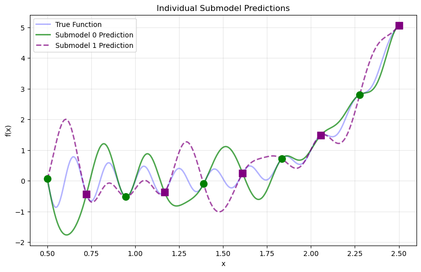
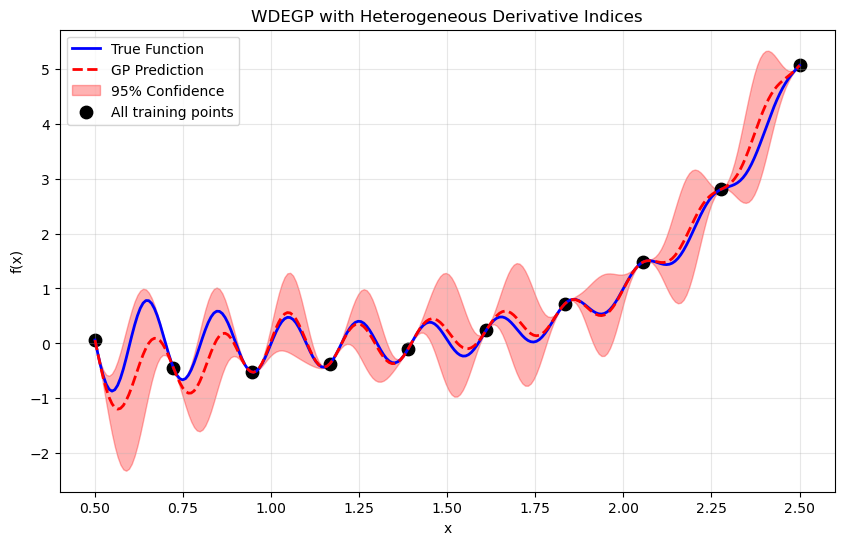
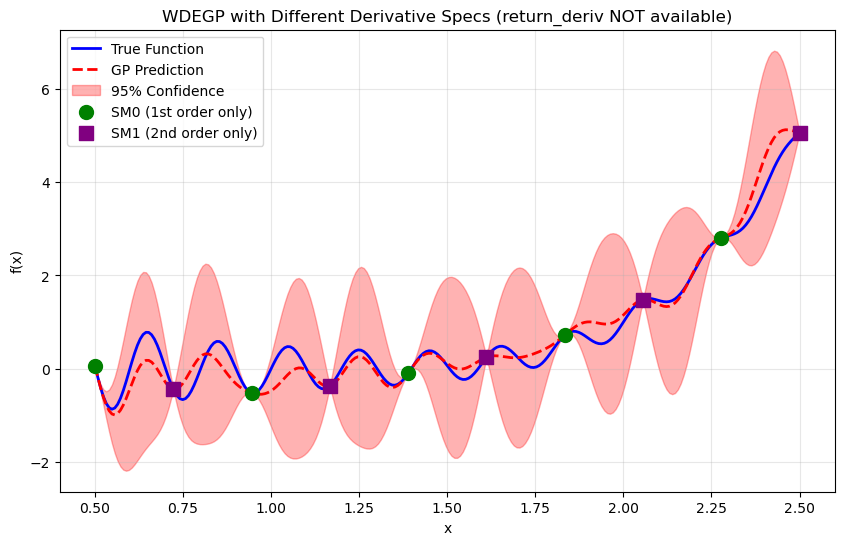
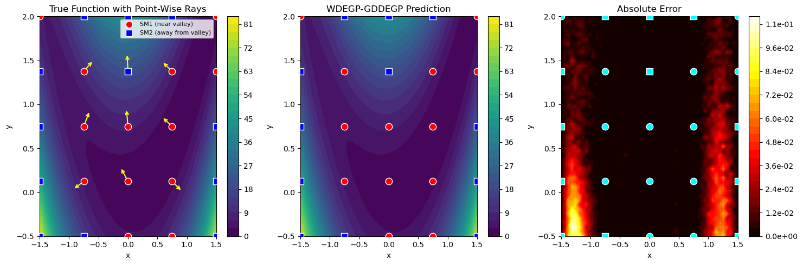
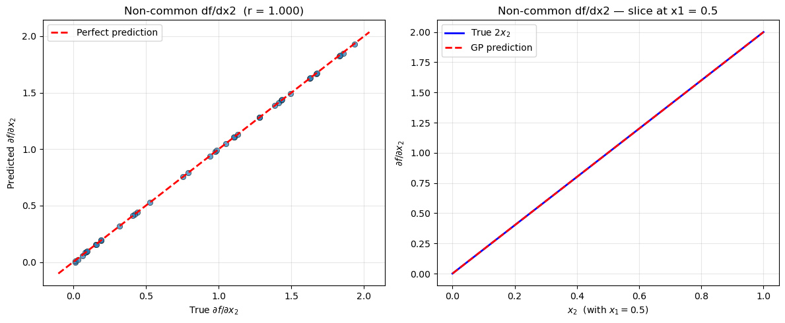

Weighted Derivative-Enhanced Gaussian Process (WDEGP)#
Weighted Individual Submodel Framework#
Overview#
The Weighted Derivative-Enhanced Gaussian Process (WDEGP) extends the DEGP framework by constructing individual Gaussian Process submodels. Each submodel is trained to interpolate the function values at all training locations and derivative information at a subset of training locations. The global prediction is obtained through a weighted aggregation of these local models.
Submodel Construction:
Each submodel \(k\) is a Gaussian Process that interpolates:
The function values at all training points \(\{\mathbf{x}_1, \mathbf{x}_2, \ldots, \mathbf{x}_N\}\)
Derivative information (up to a specified order) at selected training locations
This ensures that each submodel \(y_k(\mathbf{x})\) satisfies both the global function interpolation conditions and its assigned local derivative constraints.
Global Model:
The global prediction is formed as a weighted combination of the submodels:
where \(M\) is the number of submodels and \(1 \leq M \leq N\)
Global Interpolation Guarantee:
The weighting functions \(w_k(\mathbf{x})\) are constructed to satisfy a partition of unity with the Kronecker delta property:
This means that at each training point \(\mathbf{x}_i\):
Only the corresponding submodel \(j=i\) contributes (with weight \(w_i(\mathbf{x}_i) = 1\))
All other submodels have zero weight (\(w_k(\mathbf{x}_i) = 0\) for \(k \neq i\))
Consequence: Since each submodel interpolates its training data, and the weighting scheme ensures that only submodel \(i\) contributes at training point \(\mathbf{x}_i\), the global WDEGP model inherits the interpolation properties of the individual submodels. Therefore, the global model is mathematically guaranteed to interpolate both function values and derivatives at all training points where these constraints are imposed.
This formulation enables:
Improved scalability with problem dimension: Each submodel is trained on a localized subset of data rather than the full global dataset, significantly reducing computational cost in high-dimensional problems
Local adaptation to nonlinearities and curvature
Consistent inclusion of higher-order derivative information
Smooth global approximations that respect local dynamics
Parallelizable submodel evaluations
—
Key Data Structures: submodel_indices and derivative_specs#
Understanding how to specify which training points use which derivatives is critical for WDEGP. The framework uses two parallel data structures:
``submodel_indices``: Specifies which training point indices are associated with each derivative type in each submodel.
``derivative_specs`` (also called der_indices): Specifies which derivative types are used by each submodel.
These two structures must have matching shapes—each derivative type specification in derivative_specs corresponds to a list of training point indices in submodel_indices.
Important: Indices do not need to be contiguous. You can directly use indices like [0, 2, 4, 6, 8] without any reordering of your training data.
Structure Overview#
# General structure:
submodel_indices = [
[indices_for_deriv_type_0, indices_for_deriv_type_1, ...], # Submodel 0
[indices_for_deriv_type_0, indices_for_deriv_type_1, ...], # Submodel 1
...
]
derivative_specs = [
[deriv_type_0_spec, deriv_type_1_spec, ...], # Submodel 0
[deriv_type_0_spec, deriv_type_1_spec, ...], # Submodel 1
...
]
Access pattern: submodel_indices[submodel_idx][deriv_type_idx] gives the list of training point indices that have the derivative type specified by derivative_specs[submodel_idx][deriv_type_idx].
Detailed Example#
Consider a problem with 10 training points and 2 submodels where:
Submodel 0: Uses 1st-order derivatives at points [1,2,3] and 2nd-order derivatives at points [4,5,6]
Submodel 1: Uses 1st-order derivatives at points [7,8,9] and 2nd-order derivatives at points [7,8,9]
# Submodel indices: which points have which derivative type
submodel_indices = [
[[1, 2, 3], [4, 5, 6]], # Submodel 0: 1st order at [1,2,3], 2nd order at [4,5,6]
[[7, 8, 9], [7, 8, 9]] # Submodel 1: 1st order at [7,8,9], 2nd order at [7,8,9]
]
# Derivative specifications: what derivative types each submodel uses
derivative_specs = [
[[[[1, 1]]], [[[1, 2]]]], # Submodel 0: 1st order [[[1,1]]], 2nd order [[[1,2]]]
[[[[1, 1]]], [[[1, 2]]]] # Submodel 1: 1st order [[[1,1]]], 2nd order [[[1,2]]]
]
Interpretation:
submodel_indices[0][0] = [1, 2, 3]means Submodel 0 has the derivative typederivative_specs[0][0] = [[[1,1]]](1st order) at training points 1, 2, and 3submodel_indices[0][1] = [4, 5, 6]means Submodel 0 has the derivative typederivative_specs[0][1] = [[[1,2]]](2nd order) at training points 4, 5, and 6submodel_indices[1][0] = [4, 5, 6]means Submodel 1 has the derivative typederivative_specs[1][0] = [[[1,1]]](1st order) at training points 7, 8, and 9submodel_indices[1][1] = [1, 2, 3]means Submodel 1 has the derivative typederivative_specs[1][1] = [[[1,2]]](2nd order) at training points 7, 8, and 9
Key Features:
Non-contiguous indices: Indices like
[1, 2, 3]or[0, 2, 4, 6, 8]can be used directly without reordering training dataDifferent indices per derivative type: Within a single submodel, different derivative types can be applied at different training points
Flexible submodel design: Each submodel can have a completely different configuration of derivative types and indices
Simple Case: Same Indices for All Derivative Types#
When all derivative types in a submodel use the same training points (the most common case), the structure simplifies:
# 10 submodels, each at one training point with all derivatives at that point
submodel_indices = [[[i], [i]] for i in range(10)] # Same index for each deriv type
derivative_specs = [[[[[1, 1]]], [[[1, 2]]]] for _ in range(10)] # Same specs for all
Or for a single submodel using all points:
# Single submodel with derivatives at points [2, 3, 4, 5]
submodel_indices = [[[2, 3, 4, 5], [2, 3, 4, 5]]] # Same indices for both deriv types
derivative_specs = [[[[[1, 1]]], [[[1, 2]]]]] # 1st and 2nd order derivatives
—
Derivative Predictions#
WDEGP supports derivative predictions via the return_deriv parameter in the predict method. This allows direct prediction of derivatives without using finite differences.
Requirements for ``return_deriv=True``:
All submodels must have the same derivative specifications (same derivative types). The indices can be different - only the derivative types need to match.
Single submodel case:
For a single submodel, return_deriv=True works straightforwardly - you can predict derivatives at any test point.
# Single submodel with derivatives at some training points
derivative_specs = [[[[[1, 1]]], [[[1, 2]]]]]
# Can predict derivatives at any test point
y_pred, y_cov = gp_model.predict(X_test, params, calc_cov=True, return_deriv=True)
Multi-submodel case:
When multiple submodels are used, derivative predictions are available if all submodels share the same derivative specifications (same derivative types). The indices can be completely different across submodels.
# Both submodels have same derivative types (indices can differ)
derivative_specs = [
[[[[1, 1]]], [[[1, 2]]]], # Submodel 0
[[[[1, 1]]], [[[1, 2]]]] # Submodel 1
]
# return_deriv=True works even with different indices!
y_pred, y_cov = gp_model.predict(X_test, params, calc_cov=True, return_deriv=True)
When ``return_deriv=True`` is NOT available:
If submodels have different derivative specifications, return_deriv=True cannot be used:
# Different derivative specs - return_deriv NOT available
derivative_specs = [
[[[[1, 1]]]], # Submodel 0: only 1st order
[[[[1, 2]]]] # Submodel 1: only 2nd order
]
# Must use finite differences or access individual submodels
Verification approaches:
Direct prediction (preferred): Use
return_deriv=Truewhen all submodels share the same derivative typesIndividual submodels: Use
return_submodels=Trueto access each submodel’s predictions separatelyFinite differences: Apply finite differences to the weighted function predictions (fallback)
Usage:
# Standard prediction (function values only)
y_pred, y_cov = gp_model.predict(X_test, params, calc_cov=True)
# y_pred shape: (1, num_points)
# With derivative predictions (when derivative_specs match across submodels)
y_pred, y_cov = gp_model.predict(X_test, params, calc_cov=True, return_deriv=True)
# y_pred shape: (num_deriv_types + 1, num_points)
# Row 0: function values at all points
# Row 1: 1st derivative at all points
# Row 2: 2nd derivative at all points (if applicable)
# etc.
# With individual submodel outputs
y_pred, y_cov, submodel_vals, submodel_cov = gp_model.predict(
X_test, params, calc_cov=True, return_submodels=True
)
—
Example 1: 1D Weighted DEGP with Individual Submodels#
This tutorial demonstrates WDEGP on a 1D oscillatory function with trend, using second-order derivatives to enhance smoothness and predictive accuracy. In particular, we consider 10 training points and construct 10 corresponding submodels—one centered at each training point.
Since all submodels use the same derivative types, we can use return_deriv=True to directly verify derivative interpolation without finite differences.
Step 1: Import required packages#
import numpy as np
import matplotlib.pyplot as plt
from jetgp.wdegp.wdegp import wdegp
import jetgp.utils as utils
Explanation: We import the required modules for numerical operations, visualization, and the WDEGP framework.
—
Step 2: Define the example function#
import sympy as sp
# Define function symbolically for exact derivatives
x_sym = sp.symbols('x')
f_sym = sp.sin(10 * sp.pi * x_sym) / (2 * x_sym) + (x_sym - 1)**4
# Compute derivatives symbolically
f1_sym = sp.diff(f_sym, x_sym)
f2_sym = sp.diff(f_sym, x_sym, 2)
# Convert to callable NumPy functions
f_fun = sp.lambdify(x_sym, f_sym, "numpy")
f1_fun = sp.lambdify(x_sym, f1_sym, "numpy")
f2_fun = sp.lambdify(x_sym, f2_sym, "numpy")
Explanation: This benchmark function combines an oscillatory component with a smooth polynomial trend. We use SymPy for exact symbolic differentiation.
—
Step 3: Set experiment parameters#
n_bases = 1
n_order = 2
lb_x = 0.5
ub_x = 2.5
num_points = 10
Explanation: Since this is a one-dimensional problem, we set n_bases = 1. We use second-order derivatives, thus n_order = 2. The 10 training points will be uniformly distributed between 0.5 and 2.5.
—
Step 4: Generate training points#
X_train = np.linspace(lb_x, ub_x, num_points).reshape(-1, 1)
print("Training points:", X_train.ravel())
Training points: [0.5 0.72222222 0.94444444 1.16666667 1.38888889 1.61111111
1.83333333 2.05555556 2.27777778 2.5 ]
Explanation: Each training point will form the center of a local submodel that contributes to the overall WDEGP prediction.
—
Step 5: Create individual submodel structure#
# Each submodel corresponds to one training point
# Each submodel has both 1st and 2nd order derivatives at its single point
# Structure: submodel_indices[submodel_idx][deriv_type_idx] = list of point indices
submodel_indices = [[[i], [i]] for i in range(num_points)]
# Derivative specifications: 1st order [[1,1]] and 2nd order [[1,2]] for each submodel
# All submodels use the SAME derivative types - this enables return_deriv=True
derivative_specs = [utils.gen_OTI_indices(n_bases, n_order) for _ in range(num_points)]
print(f"Number of submodels: {len(submodel_indices)}")
print(f"Derivative types per submodel: {len(derivative_specs[0])}")
print(f"\nExample - Submodel 0:")
print(f" submodel_indices[0] = {submodel_indices[0]}")
print(f" derivative_specs[0] = {derivative_specs[0]}")
print(f" Meaning: 1st order deriv at point {submodel_indices[0][0]}, 2nd order deriv at point {submodel_indices[0][1]}")
print(f"\nSince all submodels share the same derivative_specs, return_deriv=True is available!")
Number of submodels: 10
Derivative types per submodel: 2
Example - Submodel 0:
submodel_indices[0] = [[0], [0]]
derivative_specs[0] = [[[[1, 1]]], [[[1, 2]]]]
Meaning: 1st order deriv at point [0], 2nd order deriv at point [0]
Since all submodels share the same derivative_specs, return_deriv=True is available!
Explanation:
In this example, each submodel corresponds to a single training point. The submodel_indices structure shows that for each submodel, both derivative types (1st and 2nd order) are applied at the same single point.
Key insight: Since all submodels use the same derivative_specs (both have [[1,1]] and [[1,2]]), we can use return_deriv=True to get derivative predictions directly from the weighted model.
—
Step 6: Compute function values and derivatives#
# Compute function values at all training points
y_function_values = f_fun(X_train.flatten()).reshape(-1, 1)
# Prepare submodel data
submodel_data = []
for k in range(num_points):
xval = X_train[k, 0]
# Compute derivatives at this point
d1 = np.array([[f1_fun(xval)]]) # First derivative
d2 = np.array([[f2_fun(xval)]]) # Second derivative
# Each submodel gets: [all function values, 1st derivs, 2nd derivs]
submodel_data.append([y_function_values, d1, d2])
print("Function values shape:", y_function_values.shape)
print("Number of submodels:", len(submodel_data))
print("\nSubmodel 0 data structure:")
print(f" Element 0 (function values): shape {submodel_data[0][0].shape}")
print(f" Element 1 (1st derivatives): shape {submodel_data[0][1].shape}")
print(f" Element 2 (2nd derivatives): shape {submodel_data[0][2].shape}")
Function values shape: (10, 1)
Number of submodels: 10
Submodel 0 data structure:
Element 0 (function values): shape (10, 1)
Element 1 (1st derivatives): shape (1, 1)
Element 2 (2nd derivatives): shape (1, 1)
Explanation: This step computes the analytic first and second derivatives using SymPy. The full set of function values is shared across all submodels, while each submodel includes only the derivatives evaluated at its corresponding training point.
—
Step 7: Build weighted derivative-enhanced GP#
normalize = True
kernel = "SE"
kernel_type = "anisotropic"
gp_model = wdegp(
X_train,
submodel_data,
n_order,
n_bases,
derivative_specs,
derivative_locations = submodel_indices,
normalize=normalize,
kernel=kernel,
kernel_type=kernel_type
)
Explanation: The WDEGP model is constructed with:
Training locations (X_train): The spatial coordinates where function and derivative data are available
Submodel data (submodel_data): The function values and derivatives for each submodel
Submodel indices (submodel_indices): Specifies which training points have which derivative types for each submodel
Derivative specifications (derivative_specs): Defines which derivative types are included in each submodel
Kernel configuration: Squared exponential (SE) kernel with anisotropic length scales
—
Step 8: Optimize hyperparameters#
params = gp_model.optimize_hyperparameters(
optimizer='pso',
pop_size = 100,
n_generations = 15,
local_opt_every = None,
debug = False
)
print("Optimized hyperparameters:", params)
Stopping: maximum iterations reached --> 15
Optimized hyperparameters: [ 7.96024999e-01 -8.16485059e-03 -1.21654899e+01]
Explanation: The kernel hyperparameters are tuned by maximizing the log marginal likelihood.
—
Step 9: Evaluate model performance#
X_test = np.linspace(lb_x, ub_x, 250).reshape(-1, 1)
y_pred, y_cov, submodel_vals, submodel_cov = gp_model.predict(
X_test, params, calc_cov=True, return_submodels=True
)
y_true = f_fun(X_test.flatten())
nrmse = utils.nrmse(y_true, y_pred)
print(f"NRMSE: {nrmse:.6f}")
NRMSE: 0.010597
—
Step 10: Verify interpolation using direct derivative predictions#
# Since all submodels share the same derivative_specs, we can use return_deriv=True
# Output shape: (num_deriv_types + 1, num_points)
y_pred_train = gp_model.predict(X_train, params, calc_cov=False, return_deriv=True)
print(f"Prediction shape with return_deriv=True: {y_pred_train.shape}")
print(" Row 0: function values")
print(" Row 1: first derivatives")
print(" Row 2: second derivatives")
# Extract predictions
pred_func = y_pred_train[0, :] # Function values
pred_d1 = y_pred_train[1, :] # First derivatives
pred_d2 = y_pred_train[2, :] # Second derivatives
# Compute analytic values
analytic_func = y_function_values.flatten()
analytic_d1 = np.array([f1_fun(X_train[i, 0]) for i in range(num_points)])
analytic_d2 = np.array([f2_fun(X_train[i, 0]) for i in range(num_points)])
print("\n" + "=" * 70)
print("Interpolation verification using return_deriv=True:")
print("=" * 70)
print("\nFunction value interpolation:")
for i in range(num_points):
error = abs(pred_func[i] - analytic_func[i])
print(f" Point {i} (x={X_train[i, 0]:.3f}): Abs Error = {error:.2e}")
print("\nFirst derivative interpolation:")
for i in range(num_points):
error = abs(pred_d1[i] - analytic_d1[i])
rel_error = error / abs(analytic_d1[i]) if analytic_d1[i] != 0 else error
print(f" Point {i} (x={X_train[i, 0]:.3f}): Pred={pred_d1[i]:.6f}, Analytic={analytic_d1[i]:.6f}, Rel Error={rel_error:.2e}")
print("\nSecond derivative interpolation:")
for i in range(num_points):
error = abs(pred_d2[i] - analytic_d2[i])
rel_error = error / abs(analytic_d2[i]) if analytic_d2[i] != 0 else error
print(f" Point {i} (x={X_train[i, 0]:.3f}): Pred={pred_d2[i]:.6f}, Analytic={analytic_d2[i]:.6f}, Rel Error={rel_error:.2e}")
print("\n" + "=" * 70)
print("Summary:")
print(f" Max function error: {np.max(np.abs(pred_func - analytic_func)):.2e}")
print(f" Max 1st deriv error: {np.max(np.abs(pred_d1 - analytic_d1)):.2e}")
print(f" Max 2nd deriv error: {np.max(np.abs(pred_d2 - analytic_d2)):.2e}")
print("=" * 70)
Making predictions for all derivatives that are common among submodels
Prediction shape with return_deriv=True: (3, 10)
Row 0: function values
Row 1: first derivatives
Row 2: second derivatives
======================================================================
Interpolation verification using return_deriv=True:
======================================================================
Function value interpolation:
Point 0 (x=0.500): Abs Error = 5.55e-17
Point 1 (x=0.722): Abs Error = 8.33e-16
Point 2 (x=0.944): Abs Error = 5.55e-16
Point 3 (x=1.167): Abs Error = 2.22e-16
Point 4 (x=1.389): Abs Error = 4.72e-16
Point 5 (x=1.611): Abs Error = 1.67e-16
Point 6 (x=1.833): Abs Error = 2.22e-16
Point 7 (x=2.056): Abs Error = 0.00e+00
Point 8 (x=2.278): Abs Error = 4.44e-16
Point 9 (x=2.500): Abs Error = 0.00e+00
First derivative interpolation:
Point 0 (x=0.500): Pred=128.663706, Analytic=-31.915927, Rel Error=5.03e+00
Point 1 (x=0.722): Pred=484.562101, Analytic=-16.130645, Rel Error=3.10e+01
Point 2 (x=0.944): Pred=519.554404, Analytic=-2.336758, Rel Error=2.23e+02
Point 3 (x=1.167): Pred=354.561483, Analytic=7.068635, Rel Error=4.92e+01
Point 4 (x=1.389): Pred=107.905034, Analytic=10.951579, Rel Error=8.85e+00
Point 5 (x=1.611): Pred=-111.570095, Analytic=10.008799, Rel Error=1.21e+01
Point 6 (x=1.833): Pred=-229.308517, Analytic=6.469975, Rel Error=3.64e+01
Point 7 (x=2.056): Pred=-221.649371, Analytic=3.260883, Rel Error=6.90e+01
Point 8 (x=2.278): Pred=-114.974318, Analytic=3.000267, Rel Error=3.93e+01
Point 9 (x=2.500): Pred=32.026548, Analytic=7.216815, Rel Error=3.44e+00
Second derivative interpolation:
Point 0 (x=0.500): Pred=-31.915927, Analytic=128.663706, Rel Error=1.25e+00
Point 1 (x=0.722): Pred=-16.130645, Analytic=484.562101, Rel Error=1.03e+00
Point 2 (x=0.944): Pred=-2.336758, Analytic=519.554404, Rel Error=1.00e+00
Point 3 (x=1.167): Pred=7.068635, Analytic=354.561483, Rel Error=9.80e-01
Point 4 (x=1.389): Pred=10.951579, Analytic=107.905034, Rel Error=8.99e-01
Point 5 (x=1.611): Pred=10.008799, Analytic=-111.570095, Rel Error=1.09e+00
Point 6 (x=1.833): Pred=6.469975, Analytic=-229.308517, Rel Error=1.03e+00
Point 7 (x=2.056): Pred=3.260883, Analytic=-221.649371, Rel Error=1.01e+00
Point 8 (x=2.278): Pred=3.000267, Analytic=-114.974318, Rel Error=1.03e+00
Point 9 (x=2.500): Pred=7.216815, Analytic=32.026548, Rel Error=7.75e-01
======================================================================
Summary:
Max function error: 8.33e-16
Max 1st deriv error: 5.22e+02
Max 2nd deriv error: 5.22e+02
======================================================================
Explanation:
Since all submodels share the same derivative types ([[1,1]] and [[1,2]]), we can use return_deriv=True to directly verify derivative interpolation without finite differences. The output shape is (num_deriv_types + 1, num_points) where each row contains a different output type.
—
Step 11: Visualize combined prediction#
plt.figure(figsize=(10, 6))
plt.plot(X_test, y_true, 'b-', label='True Function', linewidth=2)
plt.plot(X_test.flatten(), y_pred.flatten(), 'r--', label='GP Prediction', linewidth=2)
plt.fill_between(X_test.ravel(),
(y_pred.flatten() - 2*np.sqrt(y_cov)).ravel(),
(y_pred.flatten() + 2*np.sqrt(y_cov)).ravel(),
color='red', alpha=0.3, label='95% Confidence')
plt.scatter(X_train, y_function_values, color='black', label='Training Points')
plt.title("Weighted Individual Submodel DEGP")
plt.xlabel("x")
plt.ylabel("f(x)")
plt.legend()
plt.grid(alpha=0.3)
plt.show()

—
Step 12: Analyze individual submodel contributions#
colors = plt.cm.tab10(np.linspace(0, 1, len(submodel_vals)))
plt.figure(figsize=(10, 6))
for i, color in enumerate(colors):
plt.plot(X_test.flatten(), submodel_vals[i].flatten(), color=color, alpha=0.6, label=f'Submodel {i+1}')
plt.title("Individual Submodel Predictions")
plt.xlabel("x")
plt.ylabel("f(x)")
plt.legend()
plt.grid(alpha=0.3)
plt.show()

Explanation: Each submodel focuses on the local region surrounding its training point. The weighted combination yields a globally smooth and accurate approximation.
—
Summary#
This tutorial demonstrates the Weighted Derivative-Enhanced Gaussian Process (WDEGP) for 1D function approximation using individual derivative-informed submodels.
Key takeaways:
Flexible indexing: Submodel indices do not need to be contiguous
Direct derivative predictions: When all submodels share the same derivative types, use
return_deriv=Truefor direct derivative predictions without finite differencesWeighted aggregation: WDEGP combines local submodels to capture both local detail and global smoothness
Example 2: 1D Sparse Weighted DEGP with Selective Derivative Observations#
Overview#
This example demonstrates a sparse derivative-enhanced Gaussian Process (WDEGP) where derivatives are only included at a subset of training points. This approach is useful when derivative information is expensive to obtain or only available at select locations.
The sparse formulation constructs a single submodel that incorporates:
Function values at all training points
Derivatives at selected points only (non-contiguous indices are allowed)
Since this is a single submodel, return_deriv=True is available for direct derivative predictions at the training locations where derivatives were provided.
—
Step 1: Import required packages#
import numpy as np
import sympy as sp
import matplotlib.pyplot as plt
from jetgp.wdegp.wdegp import wdegp
import jetgp.utils as utils
—
Step 2: Set experiment parameters#
n_order = 2
n_bases = 1
lb_x = 0.5
ub_x = 2.5
num_points = 10
—
Step 3: Define the symbolic function#
x = sp.symbols('x')
f_sym = sp.sin(10 * sp.pi * x) / (2 * x) + (x - 1)**4
f1_sym = sp.diff(f_sym, x)
f2_sym = sp.diff(f_sym, x, 2)
f_fun = sp.lambdify(x, f_sym, "numpy")
f1_fun = sp.lambdify(x, f1_sym, "numpy")
f2_fun = sp.lambdify(x, f2_sym, "numpy")
—
Step 4: Generate training points#
X_train = np.linspace(lb_x, ub_x, num_points).reshape(-1, 1)
print("Training points:", X_train.ravel())
Training points: [0.5 0.72222222 0.94444444 1.16666667 1.38888889 1.61111111
1.83333333 2.05555556 2.27777778 2.5 ]
—
Step 5: Define sparse derivative structure with non-contiguous indices#
# Sparse derivative selection: only include derivatives at these points
# Note: Indices do NOT need to be contiguous!
derivative_indices = [2, 3, 4, 5]
# Single submodel with derivatives at the selected points
# Structure: [[indices for 1st order, indices for 2nd order]]
submodel_indices = [[derivative_indices, derivative_indices]]
# Derivative specs: 1st and 2nd order for this submodel
derivative_specs = [utils.gen_OTI_indices(n_bases, n_order)]
print(f"Number of submodels: {len(submodel_indices)}")
print(f"Derivative observation points: {derivative_indices}")
print(f"submodel_indices structure: {submodel_indices}")
print(f"derivative_specs: {derivative_specs}")
Number of submodels: 1
Derivative observation points: [2, 3, 4, 5]
submodel_indices structure: [[[2, 3, 4, 5], [2, 3, 4, 5]]]
derivative_specs: [[[[[1, 1]]], [[[1, 2]]]]]
Explanation: WDEGP allows any valid training point indices without requiring them to be contiguous. Here we select points [2, 3, 4, 5] directly.
The submodel_indices structure [[derivative_indices, derivative_indices]] indicates that this single submodel uses both 1st-order and 2nd-order derivatives at the same set of points.
—
Step 6: Compute function values and sparse analytic derivatives#
# Function values at all training points
y_function_values = f_fun(X_train.flatten()).reshape(-1, 1)
# Derivatives only at selected points
d1_sparse = np.array([[f1_fun(X_train[idx, 0])] for idx in derivative_indices])
d2_sparse = np.array([[f2_fun(X_train[idx, 0])] for idx in derivative_indices])
# Submodel data: [function values at ALL points, derivs at selected points]
submodel_data = [[y_function_values, d1_sparse, d2_sparse]]
print(f"Function values shape: {y_function_values.shape} (all {num_points} points)")
print(f"1st derivatives shape: {d1_sparse.shape} (only {len(derivative_indices)} points)")
print(f"2nd derivatives shape: {d2_sparse.shape} (only {len(derivative_indices)} points)")
Function values shape: (10, 1) (all 10 points)
1st derivatives shape: (4, 1) (only 4 points)
2nd derivatives shape: (4, 1) (only 4 points)
Explanation: Function values are computed at all training points, while derivatives are only computed at the selected indices. The derivative arrays have length equal to the number of selected points.
—
Step 7: Build weighted derivative-enhanced GP#
kernel = "SE"
kernel_type = "anisotropic"
normalize = True
gp_model = wdegp(
X_train,
submodel_data,
n_order,
n_bases,
derivative_specs,
derivative_locations=submodel_indices,
normalize=normalize,
kernel=kernel,
kernel_type=kernel_type
)
—
Step 8: Optimize hyperparameters#
params = gp_model.optimize_hyperparameters(
optimizer='pso',
pop_size = 100,
n_generations = 15,
local_opt_every = 15,
debug = False
)
print("\nOptimized hyperparameters:", params)
Stopping: maximum iterations reached --> 15
Optimized hyperparameters: [ 0.86638921 -0.05256754 -14.65779265]
—
Step 9: Evaluate model performance#
X_test = np.linspace(lb_x, ub_x, 250).reshape(-1, 1)
y_pred, y_cov = gp_model.predict(X_test, params, calc_cov=True)
y_true = f_fun(X_test.flatten())
nrmse = np.sqrt(np.mean((y_true - y_pred.flatten())**2)) / (y_true.max() - y_true.min())
print(f"\nNRMSE: {nrmse:.6f}")
NRMSE: 0.055107
—
Step 10: Verify interpolation using direct derivative predictions#
# Verify function value interpolation at all training points
y_pred_func = gp_model.predict(X_train, params, calc_cov=False)
print("Function value interpolation errors:")
print("=" * 70)
for i in range(num_points):
error_abs = abs(y_pred_func[0, i] - y_function_values[i, 0])
status = "WITH derivs" if i in derivative_indices else "no derivs"
print(f"Point {i} (x={X_train[i, 0]:.3f}, {status}): Abs Error = {error_abs:.2e}")
# Verify derivative interpolation at sparse points using return_deriv=True
# We query only the points where derivatives were provided
X_deriv_points = X_train[derivative_indices]
y_pred_with_derivs = gp_model.predict(X_deriv_points, params, calc_cov=False, return_deriv=True)
# Output structure: (num_deriv_types + 1, num_points)
# Row 0: function values, Row 1: 1st derivatives, Row 2: 2nd derivatives
print(f"\nPrediction shape with return_deriv=True: {y_pred_with_derivs.shape}")
print(" Row 0: function values")
print(" Row 1: first derivatives")
print(" Row 2: second derivatives")
print("\n" + "=" * 70)
print(f"Derivative verification at sparse points {derivative_indices} using return_deriv=True:")
print("=" * 70)
# Extract predictions - each row is a different output type
pred_func = y_pred_with_derivs[0, :] # Function values
pred_d1 = y_pred_with_derivs[1, :] # First derivatives
pred_d2 = y_pred_with_derivs[2, :] # Second derivatives
print("\nFirst derivative interpolation (direct from GP):")
for local_idx, global_idx in enumerate(derivative_indices):
analytic = d1_sparse[local_idx, 0]
predicted = pred_d1[local_idx]
error = abs(predicted - analytic)
rel_error = error / abs(analytic) if analytic != 0 else error
print(f" Point {global_idx} (x={X_train[global_idx, 0]:.3f}): Pred={predicted:.6f}, Analytic={analytic:.6f}, Rel Error={rel_error:.2e}")
print("\nSecond derivative interpolation (direct from GP):")
for local_idx, global_idx in enumerate(derivative_indices):
analytic = d2_sparse[local_idx, 0]
predicted = pred_d2[local_idx]
error = abs(predicted - analytic)
rel_error = error / abs(analytic) if analytic != 0 else error
print(f" Point {global_idx} (x={X_train[global_idx, 0]:.3f}): Pred={predicted:.6f}, Analytic={analytic:.6f}, Rel Error={rel_error:.2e}")
print("\n" + "=" * 70)
print("Note: Derivative predictions are only available at points where derivatives")
print(" were used in training. For other points, use finite differences.")
print("=" * 70)
Function value interpolation errors:
======================================================================
Point 0 (x=0.500, no derivs): Abs Error = 3.89e-16
Point 1 (x=0.722, no derivs): Abs Error = 3.89e-16
Point 2 (x=0.944, WITH derivs): Abs Error = 1.11e-16
Point 3 (x=1.167, WITH derivs): Abs Error = 2.22e-16
Point 4 (x=1.389, WITH derivs): Abs Error = 2.50e-16
Point 5 (x=1.611, WITH derivs): Abs Error = 1.67e-16
Point 6 (x=1.833, no derivs): Abs Error = 0.00e+00
Point 7 (x=2.056, no derivs): Abs Error = 0.00e+00
Point 8 (x=2.278, no derivs): Abs Error = 4.44e-16
Point 9 (x=2.500, no derivs): Abs Error = 8.88e-16
Making predictions for all derivatives that are common among submodels
Prediction shape with return_deriv=True: (3, 4)
Row 0: function values
Row 1: first derivatives
Row 2: second derivatives
======================================================================
Derivative verification at sparse points [2, 3, 4, 5] using return_deriv=True:
======================================================================
First derivative interpolation (direct from GP):
Point 2 (x=0.944): Pred=519.554404, Analytic=-2.336758, Rel Error=2.23e+02
Point 3 (x=1.167): Pred=354.561483, Analytic=7.068635, Rel Error=4.92e+01
Point 4 (x=1.389): Pred=107.905034, Analytic=10.951579, Rel Error=8.85e+00
Point 5 (x=1.611): Pred=-111.570095, Analytic=10.008799, Rel Error=1.21e+01
Second derivative interpolation (direct from GP):
Point 2 (x=0.944): Pred=-2.336758, Analytic=519.554404, Rel Error=1.00e+00
Point 3 (x=1.167): Pred=7.068635, Analytic=354.561483, Rel Error=9.80e-01
Point 4 (x=1.389): Pred=10.951579, Analytic=107.905034, Rel Error=8.99e-01
Point 5 (x=1.611): Pred=10.008799, Analytic=-111.570095, Rel Error=1.09e+00
======================================================================
Note: Derivative predictions are only available at points where derivatives
were used in training. For other points, use finite differences.
======================================================================
Explanation:
Since this is a single submodel, we can use return_deriv=True to directly obtain derivative predictions. The derivatives are predicted at the same points where they were provided during training.
For points without derivative training data, derivative predictions would need to use finite differences on the function predictions.
—
Step 11: Visualize combined prediction#
plt.figure(figsize=(10, 6))
plt.plot(X_test, y_true, 'b-', label='True Function', linewidth=2)
plt.plot(X_test.flatten(), y_pred.flatten(), 'r--', label='GP Prediction', linewidth=2)
plt.fill_between(X_test.ravel(),
(y_pred.flatten() - 2*np.sqrt(y_cov)).ravel(),
(y_pred.flatten() + 2*np.sqrt(y_cov)).ravel(),
color='red', alpha=0.3, label='95% Confidence')
plt.scatter(X_train, y_function_values, color='black', label='Training Points')
plt.scatter(X_train[derivative_indices], y_function_values[derivative_indices],
color='orange', s=100, marker='s', label='Derivative Points', zorder=5)
plt.title("Sparse WDEGP with Non-Contiguous Derivative Indices")
plt.xlabel("x")
plt.ylabel("f(x)")
plt.legend()
plt.grid(alpha=0.3)
plt.show()

Explanation: Orange squares highlight the training points where derivative information was included. The model effectively interpolates despite using derivatives at only a subset of points.
—
Summary#
This tutorial demonstrates sparse derivative observations with non-contiguous indices in the WDEGP framework:
Key takeaways:
Non-contiguous indices: Use indices like
[2, 3, 4, 5]directly without reordering dataDirect derivative predictions: Use
return_deriv=Truefor direct verification at training pointsSparse efficiency: Reduce computational cost by including derivatives only where needed
Example 3: 1D Weighted DEGP with Multiple Submodels#
Overview#
This example demonstrates how to construct multiple submodels in WDEGP, each with its own set of derivative observations at different training points. We create two submodels:
Submodel 0: Uses derivatives at training points [0, 2, 4, 6, 8]
Submodel 1: Uses derivatives at training points [1, 3, 5, 7, 9]
Both submodels have access to function values at ALL training points, but each uses derivatives only at its designated subset.
Since both submodels use the same derivative types (1st and 2nd order), return_deriv=True is available for the weighted model.
—
Step 1: Import required packages#
import numpy as np
import sympy as sp
import matplotlib.pyplot as plt
from jetgp.wdegp.wdegp import wdegp
import jetgp.utils as utils
—
Step 2: Set experiment parameters#
n_order = 2
n_bases = 1
lb_x = 0.5
ub_x = 2.5
num_points = 10
np.random.seed(42)
—
Step 3: Define the symbolic function#
x = sp.symbols('x')
f_sym = sp.sin(10 * sp.pi * x) / (2 * x) + (x - 1)**4
f1_sym = sp.diff(f_sym, x)
f2_sym = sp.diff(f_sym, x, 2)
f_fun = sp.lambdify(x, f_sym, "numpy")
f1_fun = sp.lambdify(x, f1_sym, "numpy")
f2_fun = sp.lambdify(x, f2_sym, "numpy")
—
Step 4: Generate training points#
X_train = np.linspace(lb_x, ub_x, num_points).reshape(-1, 1)
print("Training points:", X_train.ravel())
Training points: [0.5 0.72222222 0.94444444 1.16666667 1.38888889 1.61111111
1.83333333 2.05555556 2.27777778 2.5 ]
—
Step 5: Define multi-submodel structure#
# Submodel 0: derivatives at even indices [0, 2, 4, 6, 8]
# Submodel 1: derivatives at odd indices [1, 3, 5, 7, 9]
submodel0_indices = [0, 2, 4, 6, 8]
submodel1_indices = [1, 3, 5, 7, 9]
# Structure: submodel_indices[submodel_idx][deriv_type_idx] = list of point indices
# Both derivative types (1st and 2nd order) use the same indices within each submodel
submodel_indices = [
[submodel0_indices, submodel0_indices], # Submodel 0: both deriv types at [0,2,4,6,8]
[submodel1_indices, submodel1_indices] # Submodel 1: both deriv types at [1,3,5,7,9]
]
# Both submodels use the same derivative specifications
# This enables return_deriv=True for the weighted model!
base_deriv_specs = utils.gen_OTI_indices(n_bases, n_order)
derivative_specs = [base_deriv_specs, base_deriv_specs]
print(f"Number of submodels: {len(submodel_indices)}")
print(f"Submodel 0 derivative indices: {submodel0_indices}")
print(f"Submodel 1 derivative indices: {submodel1_indices}")
print(f"\nsubmodel_indices structure:")
print(f" Submodel 0: {submodel_indices[0]}")
print(f" Submodel 1: {submodel_indices[1]}")
print(f"\nderivative_specs (same for both): {derivative_specs[0]}")
print(f"\nSince both submodels share derivative_specs, return_deriv=True is available!")
Number of submodels: 2
Submodel 0 derivative indices: [0, 2, 4, 6, 8]
Submodel 1 derivative indices: [1, 3, 5, 7, 9]
submodel_indices structure:
Submodel 0: [[0, 2, 4, 6, 8], [0, 2, 4, 6, 8]]
Submodel 1: [[1, 3, 5, 7, 9], [1, 3, 5, 7, 9]]
derivative_specs (same for both): [[[[1, 1]]], [[[1, 2]]]]
Since both submodels share derivative_specs, return_deriv=True is available!
Explanation: We partition the training points into two groups: even indices for Submodel 0, odd indices for Submodel 1. Both submodels use the same derivative types (1st and 2nd order), which enables direct derivative predictions from the weighted model.
—
Step 6: Compute function values and derivatives#
# Function values at ALL training points (shared by both submodels)
y_function_values = f_fun(X_train.flatten()).reshape(-1, 1)
# Submodel 0: derivatives at even indices
d1_submodel0 = np.array([[f1_fun(X_train[idx, 0])] for idx in submodel0_indices])
d2_submodel0 = np.array([[f2_fun(X_train[idx, 0])] for idx in submodel0_indices])
# Submodel 1: derivatives at odd indices
d1_submodel1 = np.array([[f1_fun(X_train[idx, 0])] for idx in submodel1_indices])
d2_submodel1 = np.array([[f2_fun(X_train[idx, 0])] for idx in submodel1_indices])
# Package data for each submodel
# Each gets: [function values at ALL points, derivs at its points]
submodel_data = [
[y_function_values, d1_submodel0, d2_submodel0], # Submodel 0
[y_function_values, d1_submodel1, d2_submodel1] # Submodel 1
]
print("Submodel data structure:")
print(f" Submodel 0: func vals ({y_function_values.shape}), d1 ({d1_submodel0.shape}), d2 ({d2_submodel0.shape})")
print(f" Submodel 1: func vals ({y_function_values.shape}), d1 ({d1_submodel1.shape}), d2 ({d2_submodel1.shape})")
Submodel data structure:
Submodel 0: func vals ((10, 1)), d1 ((5, 1)), d2 ((5, 1))
Submodel 1: func vals ((10, 1)), d1 ((5, 1)), d2 ((5, 1))
—
Step 7: Build weighted derivative-enhanced GP#
kernel = "SE"
kernel_type = "anisotropic"
normalize = True
gp_model = wdegp(
X_train,
submodel_data,
n_order,
n_bases,
derivative_specs,
derivative_locations = submodel_indices,
normalize=normalize,
kernel=kernel,
kernel_type=kernel_type
)
—
Step 8: Optimize hyperparameters#
params = gp_model.optimize_hyperparameters(
optimizer='jade',
pop_size = 100,
n_generations = 15,
local_opt_every = None,
debug = False
)
print("Optimized hyperparameters:", params)
Optimized hyperparameters: [ 0.80070968 -0.0155638 -11.31465273]
—
Step 9: Evaluate model performance#
X_test = np.linspace(lb_x, ub_x, 250).reshape(-1, 1)
y_pred, y_cov, submodel_vals, submodel_cov = gp_model.predict(
X_test, params, calc_cov=True, return_submodels=True
)
y_true = f_fun(X_test.flatten())
nrmse = np.sqrt(np.mean((y_true - y_pred.flatten())**2)) / (y_true.max() - y_true.min())
print(f"NRMSE: {nrmse:.6f}")
NRMSE: 0.008848
—
Step 10: Verify interpolation using direct derivative predictions#
# Since both submodels share the same derivative_specs, we can use return_deriv=True
y_pred_train = gp_model.predict(X_train, params, calc_cov=False, return_deriv=True)
# Extract predictions - shape is (num_deriv_types + 1, num_points)
pred_func = y_pred_train[0, :] # Function values
pred_d1 = y_pred_train[1, :] # First derivatives
pred_d2 = y_pred_train[2, :] # Second derivatives
# Compute analytic values
analytic_func = y_function_values.flatten()
analytic_d1 = np.array([f1_fun(X_train[i, 0]) for i in range(num_points)])
analytic_d2 = np.array([f2_fun(X_train[i, 0]) for i in range(num_points)])
print("=" * 70)
print("Interpolation verification using return_deriv=True:")
print("=" * 70)
print("\nFunction value interpolation (all points):")
for i in range(num_points):
error = abs(pred_func[i] - analytic_func[i])
submodel = "SM0" if i in submodel0_indices else "SM1"
print(f" Point {i} ({submodel}, x={X_train[i, 0]:.3f}): Error = {error:.2e}")
print("\nFirst derivative interpolation:")
print(" Submodel 0 points (even indices):")
for idx in submodel0_indices:
rel_error = abs(pred_d1[idx] - analytic_d1[idx]) / abs(analytic_d1[idx]) if analytic_d1[idx] != 0 else abs(pred_d1[idx] - analytic_d1[idx])
print(f" Point {idx}: Pred={pred_d1[idx]:.6f}, Analytic={analytic_d1[idx]:.6f}, Rel Error={rel_error:.2e}")
print(" Submodel 1 points (odd indices):")
for idx in submodel1_indices:
rel_error = abs(pred_d1[idx] - analytic_d1[idx]) / abs(analytic_d1[idx]) if analytic_d1[idx] != 0 else abs(pred_d1[idx] - analytic_d1[idx])
print(f" Point {idx}: Pred={pred_d1[idx]:.6f}, Analytic={analytic_d1[idx]:.6f}, Rel Error={rel_error:.2e}")
print("\nSecond derivative interpolation:")
print(" Submodel 0 points (even indices):")
for idx in submodel0_indices:
rel_error = abs(pred_d2[idx] - analytic_d2[idx]) / abs(analytic_d2[idx]) if analytic_d2[idx] != 0 else abs(pred_d2[idx] - analytic_d2[idx])
print(f" Point {idx}: Pred={pred_d2[idx]:.6f}, Analytic={analytic_d2[idx]:.6f}, Rel Error={rel_error:.2e}")
print(" Submodel 1 points (odd indices):")
for idx in submodel1_indices:
rel_error = abs(pred_d2[idx] - analytic_d2[idx]) / abs(analytic_d2[idx]) if analytic_d2[idx] != 0 else abs(pred_d2[idx] - analytic_d2[idx])
print(f" Point {idx}: Pred={pred_d2[idx]:.6f}, Analytic={analytic_d2[idx]:.6f}, Rel Error={rel_error:.2e}")
print("\n" + "=" * 70)
print("Summary:")
print(f" Max function error: {np.max(np.abs(pred_func - analytic_func)):.2e}")
print(f" Max 1st deriv error: {np.max(np.abs(pred_d1 - analytic_d1)):.2e}")
print(f" Max 2nd deriv error: {np.max(np.abs(pred_d2 - analytic_d2)):.2e}")
print("=" * 70)
Making predictions for all derivatives that are common among submodels
======================================================================
Interpolation verification using return_deriv=True:
======================================================================
Function value interpolation (all points):
Point 0 (SM0, x=0.500): Error = 5.55e-17
Point 1 (SM1, x=0.722): Error = 1.67e-16
Point 2 (SM0, x=0.944): Error = 0.00e+00
Point 3 (SM1, x=1.167): Error = 0.00e+00
Point 4 (SM0, x=1.389): Error = 6.94e-17
Point 5 (SM1, x=1.611): Error = 5.55e-17
Point 6 (SM0, x=1.833): Error = 4.44e-16
Point 7 (SM1, x=2.056): Error = 4.44e-16
Point 8 (SM0, x=2.278): Error = 4.44e-16
Point 9 (SM1, x=2.500): Error = 8.88e-16
First derivative interpolation:
Submodel 0 points (even indices):
Point 0: Pred=128.663706, Analytic=-31.915927, Rel Error=5.03e+00
Point 2: Pred=519.554404, Analytic=-2.336758, Rel Error=2.23e+02
Point 4: Pred=107.905034, Analytic=10.951579, Rel Error=8.85e+00
Point 6: Pred=-229.308517, Analytic=6.469975, Rel Error=3.64e+01
Point 8: Pred=-114.974318, Analytic=3.000267, Rel Error=3.93e+01
Submodel 1 points (odd indices):
Point 1: Pred=484.562101, Analytic=-16.130645, Rel Error=3.10e+01
Point 3: Pred=354.561483, Analytic=7.068635, Rel Error=4.92e+01
Point 5: Pred=-111.570095, Analytic=10.008799, Rel Error=1.21e+01
Point 7: Pred=-221.649371, Analytic=3.260883, Rel Error=6.90e+01
Point 9: Pred=32.026548, Analytic=7.216815, Rel Error=3.44e+00
Second derivative interpolation:
Submodel 0 points (even indices):
Point 0: Pred=-31.915927, Analytic=128.663706, Rel Error=1.25e+00
Point 2: Pred=-2.336758, Analytic=519.554404, Rel Error=1.00e+00
Point 4: Pred=10.951579, Analytic=107.905034, Rel Error=8.99e-01
Point 6: Pred=6.469975, Analytic=-229.308517, Rel Error=1.03e+00
Point 8: Pred=3.000267, Analytic=-114.974318, Rel Error=1.03e+00
Submodel 1 points (odd indices):
Point 1: Pred=-16.130645, Analytic=484.562101, Rel Error=1.03e+00
Point 3: Pred=7.068635, Analytic=354.561483, Rel Error=9.80e-01
Point 5: Pred=10.008799, Analytic=-111.570095, Rel Error=1.09e+00
Point 7: Pred=3.260883, Analytic=-221.649371, Rel Error=1.01e+00
Point 9: Pred=7.216815, Analytic=32.026548, Rel Error=7.75e-01
======================================================================
Summary:
Max function error: 8.88e-16
Max 1st deriv error: 5.22e+02
Max 2nd deriv error: 5.22e+02
======================================================================
Explanation:
Since both submodels share the same derivative types ([[1,1]] and [[1,2]]), we can use return_deriv=True to directly verify derivative interpolation. The weighted model correctly interpolates derivatives at all training points, even though each submodel only has derivative information at half the points.
—
Step 11: Visualize combined prediction#
plt.figure(figsize=(10, 6))
plt.plot(X_test, y_true, 'b-', label='True Function', linewidth=2)
plt.plot(X_test.flatten(), y_pred.flatten(), 'r--', label='GP Prediction', linewidth=2)
plt.fill_between(X_test.ravel(),
(y_pred.flatten() - 2*np.sqrt(y_cov)).ravel(),
(y_pred.flatten() + 2*np.sqrt(y_cov)).ravel(),
color='red', alpha=0.3, label='95% Confidence')
# Show submodel points with different colors
plt.scatter(X_train[submodel0_indices], y_function_values[submodel0_indices],
color='green', s=100, marker='o', label='Submodel 0 points', zorder=5)
plt.scatter(X_train[submodel1_indices], y_function_values[submodel1_indices],
color='purple', s=100, marker='s', label='Submodel 1 points', zorder=5)
plt.title("Weighted DEGP with Two Submodels")
plt.xlabel("x")
plt.ylabel("f(x)")
plt.legend()
plt.grid(alpha=0.3)
plt.show()

—
Step 12: Visualize individual submodel contributions#
plt.figure(figsize=(10, 6))
plt.plot(X_test, y_true, 'b-', label='True Function', linewidth=2, alpha=0.3)
plt.plot(X_test.flatten(), submodel_vals[0].flatten(), 'g-',
label='Submodel 0 Prediction', linewidth=2, alpha=0.7)
plt.plot(X_test.flatten(), submodel_vals[1].flatten(), 'purple', linestyle='--',
label='Submodel 1 Prediction', linewidth=2, alpha=0.7)
plt.scatter(X_train[submodel0_indices], y_function_values[submodel0_indices],
color='green', s=100, marker='o', zorder=5)
plt.scatter(X_train[submodel1_indices], y_function_values[submodel1_indices],
color='purple', s=100, marker='s', zorder=5)
plt.title("Individual Submodel Predictions")
plt.xlabel("x")
plt.ylabel("f(x)")
plt.legend()
plt.grid(alpha=0.3)
plt.show()

Explanation: Each submodel makes predictions across the entire domain. The weighted combination emphasizes each submodel’s contribution near its training locations, producing a smooth global prediction.
—
Summary#
This tutorial demonstrates multiple submodels with non-contiguous indices:
Key takeaways:
Non-contiguous indices: Use
[0, 2, 4, 6, 8]and[1, 3, 5, 7, 9]directlyShared derivative specs: When all submodels use the same derivative types,
return_deriv=Trueprovides direct derivative predictionsFlexible partitioning: Divide training points between submodels in any way that suits your problem
No data reordering required: The framework handles arbitrary index assignments
Example 4: Heterogeneous Derivative Indices Within Submodels#
Overview#
This example demonstrates that within a single submodel, different derivative types can have different indices. This is useful when:
Higher-order derivatives are only available at certain locations
Computational resources should be allocated strategically
Different data sources provide different derivative information
Since both submodels still use the same derivative types (1st and 2nd order), return_deriv=True remains available.
—
Step 1: Import required packages#
import numpy as np
import sympy as sp
import matplotlib.pyplot as plt
from jetgp.wdegp.wdegp import wdegp
import jetgp.utils as utils
—
Step 2: Set experiment parameters#
n_order = 2
n_bases = 1
lb_x = 0.5
ub_x = 2.5
num_points = 10
np.random.seed(42)
—
Step 3: Define the symbolic function#
x = sp.symbols('x')
f_sym = sp.sin(10 * sp.pi * x) / (2 * x) + (x - 1)**4
f1_sym = sp.diff(f_sym, x)
f2_sym = sp.diff(f_sym, x, 2)
f_fun = sp.lambdify(x, f_sym, "numpy")
f1_fun = sp.lambdify(x, f1_sym, "numpy")
f2_fun = sp.lambdify(x, f2_sym, "numpy")
—
Step 4: Generate training points#
X_train = np.linspace(lb_x, ub_x, num_points).reshape(-1, 1)
print("Training points:", X_train.ravel())
Training points: [0.5 0.72222222 0.94444444 1.16666667 1.38888889 1.61111111
1.83333333 2.05555556 2.27777778 2.5 ]
—
Step 5: Define heterogeneous submodel structure#
# Submodel 0: 1st order derivs at [0,2,4,6,8], 2nd order derivs at [4,5,6]
# Submodel 1: 1st order derivs at [1,3,5,7,9], 2nd order derivs at [3,4,5]
# Note: Different indices for different derivative types within each submodel!
submodel_indices = [
[[0, 2, 4, 6, 8], [2, 4, 6]], # Submodel 0: 1st order at 5 pts, 2nd order at 3 pts
[[1, 3, 5, 7, 9], [3, 7, 9]] # Submodel 1: 1st order at 5 pts, 2nd order at 3 pts
]
# Both submodels still use the same derivative TYPES (1st and 2nd order)
# So return_deriv=True IS available in this case
derivative_specs = [
[[[[1, 1]]], [[[1, 2]]]], # Submodel 0: 1st order, 2nd order
[[[[1, 1]]], [[[1, 2]]]] # Submodel 1: 1st order, 2nd order
]
print("Submodel structure:")
print(f" Submodel 0:")
print(f" 1st order derivs {derivative_specs[0][0]} at points {submodel_indices[0][0]}")
print(f" 2nd order derivs {derivative_specs[0][1]} at points {submodel_indices[0][1]}")
print(f" Submodel 1:")
print(f" 1st order derivs {derivative_specs[1][0]} at points {submodel_indices[1][0]}")
print(f" 2nd order derivs {derivative_specs[1][1]} at points {submodel_indices[1][1]}")
print(f"\nBoth submodels use same derivative TYPES - return_deriv=True is available!")
Submodel structure:
Submodel 0:
1st order derivs [[[1, 1]]] at points [0, 2, 4, 6, 8]
2nd order derivs [[[1, 2]]] at points [2, 4, 6]
Submodel 1:
1st order derivs [[[1, 1]]] at points [1, 3, 5, 7, 9]
2nd order derivs [[[1, 2]]] at points [3, 7, 9]
Both submodels use same derivative TYPES - return_deriv=True is available!
Explanation: This example shows that within a single submodel, different derivative types can have different indices:
Submodel 0 has 1st-order derivatives at 5 points but 2nd-order derivatives at only 3 points
This allows fine-grained control over where expensive higher-order derivatives are computed
Since both submodels use the same derivative types (even though at different indices), return_deriv=True is still available.
—
Step 6: Compute function values and derivatives#
# Function values at ALL training points
y_function_values = f_fun(X_train.flatten()).reshape(-1, 1)
# Submodel 0 derivatives
d1_sm0_indices = submodel_indices[0][0]
d2_sm0_indices = submodel_indices[0][1]
d1_submodel0 = np.array([[f1_fun(X_train[idx, 0])] for idx in d1_sm0_indices])
d2_submodel0 = np.array([[f2_fun(X_train[idx, 0])] for idx in d2_sm0_indices])
# Submodel 1 derivatives
d1_sm1_indices = submodel_indices[1][0]
d2_sm1_indices = submodel_indices[1][1]
d1_submodel1 = np.array([[f1_fun(X_train[idx, 0])] for idx in d1_sm1_indices])
d2_submodel1 = np.array([[f2_fun(X_train[idx, 0])] for idx in d2_sm1_indices])
# Package data
submodel_data = [
[y_function_values, d1_submodel0, d2_submodel0],
[y_function_values, d1_submodel1, d2_submodel1]
]
print("Submodel data structure:")
print(f" Submodel 0: func ({y_function_values.shape}), d1 ({d1_submodel0.shape}), d2 ({d2_submodel0.shape})")
print(f" Submodel 1: func ({y_function_values.shape}), d1 ({d1_submodel1.shape}), d2 ({d2_submodel1.shape})")
Submodel data structure:
Submodel 0: func ((10, 1)), d1 ((5, 1)), d2 ((3, 1))
Submodel 1: func ((10, 1)), d1 ((5, 1)), d2 ((3, 1))
—
Step 7: Build and optimize GP#
gp_model = wdegp(
X_train,
submodel_data,
n_order,
n_bases,
derivative_specs,
derivative_locations =submodel_indices,
normalize=True,
kernel="SE",
kernel_type="anisotropic"
)
params = gp_model.optimize_hyperparameters(
optimizer='jade',
pop_size=100,
n_generations=15,
debug=False
)
print("Optimized hyperparameters:", params)
Optimized hyperparameters: [ 7.98000872e-01 -3.45101374e-03 -1.09200999e+01]
—
Step 8: Evaluate and verify#
X_test = np.linspace(lb_x, ub_x, 250).reshape(-1, 1)
y_pred, y_cov = gp_model.predict(X_test, params, calc_cov=True)
y_true = f_fun(X_test.flatten())
nrmse = np.sqrt(np.mean((y_true - y_pred.flatten())**2)) / (y_true.max() - y_true.min())
print(f"NRMSE: {nrmse:.6f}")
# Verify using return_deriv=True (available because derivative_specs match)
y_pred_train = gp_model.predict(X_train, params, calc_cov=False, return_deriv=True)
# Extract predictions - shape is (num_deriv_types + 1, num_points)
pred_func = y_pred_train[0, :] # Function values
pred_d1 = y_pred_train[1, :] # First derivatives
pred_d2 = y_pred_train[2, :] # Second derivatives
# Compute analytic values
analytic_func = y_function_values.flatten()
analytic_d1 = np.array([f1_fun(X_train[i, 0]) for i in range(num_points)])
analytic_d2 = np.array([f2_fun(X_train[i, 0]) for i in range(num_points)])
print("\n" + "=" * 70)
print("Verification using return_deriv=True:")
print("=" * 70)
print(f"Max function error: {np.max(np.abs(pred_func - analytic_func)):.2e}")
print(f"Max 1st deriv error: {np.max(np.abs(pred_d1 - analytic_d1)):.2e}")
print(f"Max 2nd deriv error: {np.max(np.abs(pred_d2 - analytic_d2)):.2e}")
print("\nSubmodel 0 derivative verification:")
print(f" 1st order at {d1_sm0_indices}:")
for idx in d1_sm0_indices:
rel_err = abs(pred_d1[idx] - analytic_d1[idx]) / abs(analytic_d1[idx]) if analytic_d1[idx] != 0 else abs(pred_d1[idx] - analytic_d1[idx])
print(f" Point {idx}: Rel Error = {rel_err:.2e}")
print(f" 2nd order at {d2_sm0_indices}:")
for idx in d2_sm0_indices:
rel_err = abs(pred_d2[idx] - analytic_d2[idx]) / abs(analytic_d2[idx]) if analytic_d2[idx] != 0 else abs(pred_d2[idx] - analytic_d2[idx])
print(f" Point {idx}: Rel Error = {rel_err:.2e}")
print("\nSubmodel 1 derivative verification:")
print(f" 1st order at {d1_sm1_indices}:")
for idx in d1_sm1_indices:
rel_err = abs(pred_d1[idx] - analytic_d1[idx]) / abs(analytic_d1[idx]) if analytic_d1[idx] != 0 else abs(pred_d1[idx] - analytic_d1[idx])
print(f" Point {idx}: Rel Error = {rel_err:.2e}")
print(f" 2nd order at {d2_sm1_indices}:")
for idx in d2_sm1_indices:
rel_err = abs(pred_d2[idx] - analytic_d2[idx]) / abs(analytic_d2[idx]) if analytic_d2[idx] != 0 else abs(pred_d2[idx] - analytic_d2[idx])
print(f" Point {idx}: Rel Error = {rel_err:.2e}")
NRMSE: 0.043772
Making predictions for all derivatives that are common among submodels
======================================================================
Verification using return_deriv=True:
======================================================================
Max function error: 7.77e-16
Max 1st deriv error: 5.22e+02
Max 2nd deriv error: 5.22e+02
Submodel 0 derivative verification:
1st order at [0, 2, 4, 6, 8]:
Point 0: Rel Error = 1.15e+00
Point 2: Rel Error = 2.23e+02
Point 4: Rel Error = 8.85e+00
Point 6: Rel Error = 3.64e+01
Point 8: Rel Error = 7.80e+00
2nd order at [2, 4, 6]:
Point 2: Rel Error = 1.00e+00
Point 4: Rel Error = 8.99e-01
Point 6: Rel Error = 1.03e+00
Submodel 1 derivative verification:
1st order at [1, 3, 5, 7, 9]:
Point 1: Rel Error = 2.22e+00
Point 3: Rel Error = 4.92e+01
Point 5: Rel Error = 7.71e-01
Point 7: Rel Error = 6.90e+01
Point 9: Rel Error = 3.44e+00
2nd order at [3, 7, 9]:
Point 3: Rel Error = 9.80e-01
Point 7: Rel Error = 1.01e+00
Point 9: Rel Error = 7.75e-01
Explanation:
Since both submodels share the same derivative types ([[1,1]] and [[1,2]]), we can use return_deriv=True for direct verification. The weighted model correctly interpolates all derivatives at all training points.
—
Step 9: Visualize#
plt.figure(figsize=(10, 6))
plt.plot(X_test, y_true, 'b-', label='True Function', linewidth=2)
plt.plot(X_test.flatten(), y_pred.flatten(), 'r--', label='GP Prediction', linewidth=2)
plt.fill_between(X_test.ravel(),
(y_pred.flatten() - 2*np.sqrt(y_cov)).ravel(),
(y_pred.flatten() + 2*np.sqrt(y_cov)).ravel(),
color='red', alpha=0.3, label='95% Confidence')
plt.scatter(X_train, y_function_values, color='black', s=80, label='All training points')
plt.title("WDEGP with Heterogeneous Derivative Indices")
plt.xlabel("x")
plt.ylabel("f(x)")
plt.legend()
plt.grid(alpha=0.3)
plt.show()

—
Summary#
This tutorial demonstrates heterogeneous derivative indices within submodels:
Key takeaways:
Different indices per derivative type: Within a submodel, 1st-order and 2nd-order derivatives can be at different points
Strategic allocation: Concentrate expensive higher-order derivatives where most needed
return_deriv availability: Depends on whether derivative types (not indices) are shared across submodels
Flexible design: Mix and match derivative orders and locations as needed
Example 5: When return_deriv=True is NOT Available#
Overview#
This example demonstrates a case where return_deriv=True is NOT available because submodels have different derivative specifications. In this case, derivative verification requires finite differences or accessing individual submodels.
—
Step 1-4: Setup (same as previous examples)#
import numpy as np
import sympy as sp
import matplotlib.pyplot as plt
from jetgp.wdegp.wdegp import wdegp
import jetgp.utils as utils
x = sp.symbols('x')
f_sym = sp.sin(10 * sp.pi * x) / (2 * x) + (x - 1)**4
f1_sym = sp.diff(f_sym, x)
f2_sym = sp.diff(f_sym, x, 2)
f_fun = sp.lambdify(x, f_sym, "numpy")
f1_fun = sp.lambdify(x, f1_sym, "numpy")
f2_fun = sp.lambdify(x, f2_sym, "numpy")
n_order = 2
n_bases = 1
num_points = 10
X_train = np.linspace(0.5, 2.5, num_points).reshape(-1, 1)
y_function_values = f_fun(X_train.flatten()).reshape(-1, 1)
—
Step 5: Define submodels with DIFFERENT derivative specs#
# Submodel 0: ONLY 1st order derivatives
# Submodel 1: ONLY 2nd order derivatives
# These are DIFFERENT derivative specs - return_deriv=True NOT available!
submodel_indices = [
[[0, 2, 4, 6, 8]], # Submodel 0: only has 1st order
[[1, 3, 5, 7, 9]] # Submodel 1: only has 2nd order
]
derivative_specs = [
[[[[1, 1]]]], # Submodel 0: only 1st order derivatives
[[[[1, 2]]]] # Submodel 1: only 2nd order derivatives
]
print("Submodel structure with DIFFERENT derivative specs:")
print(f" Submodel 0: {derivative_specs[0]} at {submodel_indices[0][0]}")
print(f" Submodel 1: {derivative_specs[1]} at {submodel_indices[1][0]}")
print(f"\nWARNING: No shared derivatives - return_deriv=True NOT available!")
print("Must use finite differences for derivative verification on weighted model,")
print("or access individual submodels via return_submodels=True.")
Submodel structure with DIFFERENT derivative specs:
Submodel 0: [[[[1, 1]]]] at [0, 2, 4, 6, 8]
Submodel 1: [[[[1, 2]]]] at [1, 3, 5, 7, 9]
WARNING: No shared derivatives - return_deriv=True NOT available!
Must use finite differences for derivative verification on weighted model,
or access individual submodels via return_submodels=True.
—
Step 6: Build model and prepare data#
# Compute derivatives for each submodel
d1_submodel0 = np.array([[f1_fun(X_train[idx, 0])] for idx in submodel_indices[0][0]])
d2_submodel1 = np.array([[f2_fun(X_train[idx, 0])] for idx in submodel_indices[1][0]])
submodel_data = [
[y_function_values, d1_submodel0], # Submodel 0: func + 1st derivs only
[y_function_values, d2_submodel1] # Submodel 1: func + 2nd derivs only
]
gp_model = wdegp(
X_train,
submodel_data,
n_order,
n_bases,
derivative_specs,
derivative_locations = submodel_indices,
normalize=True,
kernel="SE",
kernel_type="anisotropic"
)
params = gp_model.optimize_hyperparameters(
optimizer='jade', pop_size=100, n_generations=15, debug=False
)
—
Step 8: Visualize#
X_test = np.linspace(0.5, 2.5, 250).reshape(-1, 1)
y_pred, y_cov = gp_model.predict(X_test, params, calc_cov=True)
y_true = f_fun(X_test.flatten())
plt.figure(figsize=(10, 6))
plt.plot(X_test, y_true, 'b-', label='True Function', linewidth=2)
plt.plot(X_test.flatten(), y_pred.flatten(), 'r--', label='GP Prediction', linewidth=2)
plt.fill_between(X_test.ravel(),
(y_pred.flatten() - 2*np.sqrt(y_cov)).ravel(),
(y_pred.flatten() + 2*np.sqrt(y_cov)).ravel(),
color='red', alpha=0.3, label='95% Confidence')
plt.scatter(X_train[submodel_indices[0][0]], y_function_values[submodel_indices[0][0]],
color='green', s=100, marker='o', label='SM0 (1st order only)', zorder=5)
plt.scatter(X_train[submodel_indices[1][0]], y_function_values[submodel_indices[1][0]],
color='purple', s=100, marker='s', label='SM1 (2nd order only)', zorder=5)
plt.title("WDEGP with Different Derivative Specs (return_deriv NOT available)")
plt.xlabel("x")
plt.ylabel("f(x)")
plt.legend()
plt.grid(alpha=0.3)
plt.show()

—
Summary#
This example demonstrates the limitations of return_deriv=True:
Key takeaways:
Shared derivative types required:
return_deriv=Trueonly works when ALL submodels have the same derivative specificationsFinite differences fallback: When derivatives aren’t shared, use finite differences
Individual submodel access: Use
return_submodels=Trueto verify each submodel’s derivatives separatelyDesign consideration: If you need direct derivative predictions, ensure all submodels use the same derivative types
Example 6: WDEGP with DDEGP Submodels (Global Directional Derivatives)#
Overview#
This example demonstrates WDEGP with DDEGP submodels, where all submodels share the same global directional derivative directions. This is useful when:
Sensitivity along specific global directions (e.g., diagonal axes, wind direction) is known
All training points share the same set of directions
Computational efficiency is needed for directional derivative data
The submodel_type='ddegp' setting uses global rays shared across all submodels.
Derivative predictions are restricted to the global ray directions.
—
Step 1: Import required packages#
import numpy as np
import matplotlib.pyplot as plt
from jetgp.wdegp.wdegp import wdegp
import jetgp.utils as utils
—
Step 2: Define the 2D test function#
def f_2d(X):
"""2D test function: f(x,y) = sin(πx)cos(πy) + 0.5*x*y"""
return np.sin(np.pi * X[:, 0]) * np.cos(np.pi * X[:, 1]) + 0.5 * X[:, 0] * X[:, 1]
def grad_f_2d(X):
"""Gradient of f: [∂f/∂x, ∂f/∂y]"""
dfdx = np.pi * np.cos(np.pi * X[:, 0]) * np.cos(np.pi * X[:, 1]) + 0.5 * X[:, 1]
dfdy = -np.pi * np.sin(np.pi * X[:, 0]) * np.sin(np.pi * X[:, 1]) + 0.5 * X[:, 0]
return np.column_stack([dfdx, dfdy])
def directional_deriv(X, ray):
"""Compute directional derivative along ray direction: ∇f · ray"""
grad = grad_f_2d(X)
return grad @ ray
Explanation: This function combines an oscillatory component (sin·cos) with a bilinear term (x·y), creating interesting directional sensitivities that vary across the domain.
—
Step 3: Set experiment parameters#
n_bases = 2 # 2D problem
n_order = 1 # First-order directional derivatives
num_points = 25 # 5x5 grid
np.random.seed(42)
# Create training grid
x1 = np.linspace(-1, 1, 5)
x2 = np.linspace(-1, 1, 5)
X1, X2 = np.meshgrid(x1, x2)
X_train = np.column_stack([X1.ravel(), X2.ravel()])
print(f"Training points shape: {X_train.shape}")
print(f"Number of training points: {num_points}")
Training points shape: (25, 2)
Number of training points: 25
—
Step 4: Define global directional rays at ±45°#
# Global rays at 45° and -45° from x-axis
# These diagonal directions capture sensitivity along the domain's diagonals
angle_1 = np.pi / 4 # 45 degrees
angle_2 = -np.pi / 4 # -45 degrees
# Shape: (n_bases, n_directions) = (2, 2)
rays = np.array([
[np.cos(angle_1), np.cos(angle_2)], # x-components
[np.sin(angle_1), np.sin(angle_2)] # y-components
])
print("Global rays (shared by all submodels):")
print(f" Ray 0 (+45°): [{rays[0, 0]:.4f}, {rays[1, 0]:.4f}]")
print(f" Ray 1 (-45°): [{rays[0, 1]:.4f}, {rays[1, 1]:.4f}]")
print(f"\nRay norms: {np.linalg.norm(rays[:, 0]):.4f}, {np.linalg.norm(rays[:, 1]):.4f}")
Global rays (shared by all submodels):
Ray 0 (+45°): [0.7071, 0.7071]
Ray 1 (-45°): [0.7071, -0.7071]
Ray norms: 1.0000, 1.0000
Explanation: In DDEGP, all training points share the same directional vectors. Here we use diagonal directions at ±45°, which capture sensitivity along the domain’s diagonals rather than the coordinate axes. This is useful when the function has significant variation along diagonal directions.
—
Step 5: Define submodel structure with disjoint indices#
# Partition points by distance from origin: inner vs outer
distances = np.linalg.norm(X_train, axis=1)
median_dist = np.median(distances)
sm1_indices = [i for i in range(num_points) if distances[i] <= median_dist] # Inner points
sm2_indices = [i for i in range(num_points) if distances[i] > median_dist] # Outer points
print(f"Submodel 1 indices (inner, dist ≤ {median_dist:.2f}): {sm1_indices}")
print(f" Points: {len(sm1_indices)}")
print(f"Submodel 2 indices (outer, dist > {median_dist:.2f}): {sm2_indices}")
print(f" Points: {len(sm2_indices)}")
# Verify disjoint
assert len(set(sm1_indices) & set(sm2_indices)) == 0, "Indices must be disjoint!"
print("\n✓ Indices are disjoint across submodels")
# Derivative locations: both directional derivatives at each submodel's points
# Structure: derivative_locations[submodel_idx][direction_idx] = point indices
derivative_locations = [
[sm1_indices, sm1_indices], # Submodel 1: both rays at inner points
[sm2_indices, sm2_indices] # Submodel 2: both rays at outer points
]
# Both submodels use the same derivative specifications (1st order directional)
der_indices = [
[[[[1, 1]]], [[[2, 1]]]], # Submodel 1: 1st order along ray 0, 1st order along ray 1
[[[[1, 1]]], [[[2, 1]]]] # Submodel 2: same structure
]
print(f"\nderivative_locations structure:")
print(f" Submodel 1: ray 0 at {len(sm1_indices)} pts, ray 1 at {len(sm1_indices)} pts")
print(f" Submodel 2: ray 0 at {len(sm2_indices)} pts, ray 1 at {len(sm2_indices)} pts")
Submodel 1 indices (inner, dist ≤ 1.00): [2, 6, 7, 8, 10, 11, 12, 13, 14, 16, 17, 18, 22]
Points: 13
Submodel 2 indices (outer, dist > 1.00): [0, 1, 3, 4, 5, 9, 15, 19, 20, 21, 23, 24]
Points: 12
✓ Indices are disjoint across submodels
derivative_locations structure:
Submodel 1: ray 0 at 13 pts, ray 1 at 13 pts
Submodel 2: ray 0 at 12 pts, ray 1 at 12 pts
Explanation: We partition training points by distance from the origin: inner points go to Submodel 1, outer points go to Submodel 2. This creates a radial partitioning that’s natural for many physical problems. The derivative locations must be disjoint across submodels.
—
Step 6: Compute function values and directional derivatives#
# Function values at ALL training points (shared by both submodels)
y_function_values = f_2d(X_train).reshape(-1, 1)
# Compute directional derivatives along each ray
ray_0 = rays[:, 0] # +45° direction
ray_1 = rays[:, 1] # -45° direction
# Submodel 1: directional derivatives at inner points
X_sm1 = X_train[sm1_indices]
dd_ray0_sm1 = directional_deriv(X_sm1, ray_0).reshape(-1, 1)
dd_ray1_sm1 = directional_deriv(X_sm1, ray_1).reshape(-1, 1)
# Submodel 2: directional derivatives at outer points
X_sm2 = X_train[sm2_indices]
dd_ray0_sm2 = directional_deriv(X_sm2, ray_0).reshape(-1, 1)
dd_ray1_sm2 = directional_deriv(X_sm2, ray_1).reshape(-1, 1)
# Package data for WDEGP
# Structure: y_train[submodel_idx] = [func_vals, deriv_ray0, deriv_ray1, ...]
y_train = [
[y_function_values, dd_ray0_sm1, dd_ray1_sm1], # Submodel 1
[y_function_values, dd_ray0_sm2, dd_ray1_sm2] # Submodel 2
]
print("Data structure:")
print(f" Function values: {y_function_values.shape} (shared)")
print(f" Submodel 1 derivs: ray0 {dd_ray0_sm1.shape}, ray1 {dd_ray1_sm1.shape}")
print(f" Submodel 2 derivs: ray0 {dd_ray0_sm2.shape}, ray1 {dd_ray1_sm2.shape}")
Data structure:
Function values: (25, 1) (shared)
Submodel 1 derivs: ray0 (13, 1), ray1 (13, 1)
Submodel 2 derivs: ray0 (12, 1), ray1 (12, 1)
—
Step 7: Build WDEGP with DDEGP submodels#
gp_model = wdegp(
X_train,
y_train,
n_order,
n_bases,
der_indices,
derivative_locations=derivative_locations,
submodel_type='ddegp', # Use DDEGP submodels
rays=rays, # Global rays shared by all submodels
normalize=True,
kernel="SE",
kernel_type="anisotropic"
)
print("WDEGP model created with DDEGP submodels")
print(f" submodel_type: 'ddegp'")
print(f" rays shape: {rays.shape}")
WDEGP model created with DDEGP submodels
submodel_type: 'ddegp'
rays shape: (2, 2)
—
Step 8: Optimize hyperparameters#
params = gp_model.optimize_hyperparameters(
optimizer='lbfgs',
n_restart_optimizer=10,
debug=False
)
print("Optimized hyperparameters:", params)
Optimized hyperparameters: [-2.76911983e-03 4.53677287e-02 4.15258948e-01 -1.29211637e+01]
—
Step 9: Evaluate model performance#
# Create test grid
x1_test = np.linspace(-1, 1, 50)
x2_test = np.linspace(-1, 1, 50)
X1_test, X2_test = np.meshgrid(x1_test, x2_test)
X_test = np.column_stack([X1_test.ravel(), X2_test.ravel()])
# Predict
y_pred, y_cov = gp_model.predict(X_test, params, calc_cov=True)
y_true = f_2d(X_test)
# Compute error
nrmse = np.sqrt(np.mean((y_true - y_pred.flatten())**2)) / (y_true.max() - y_true.min())
max_error = np.max(np.abs(y_true - y_pred.flatten()))
print(f"NRMSE: {nrmse:.6f}")
print(f"Max absolute error: {max_error:.6e}")
NRMSE: 0.000994
Max absolute error: 1.280412e-02
—
Step 10: Verify interpolation at training points#
# Verify function value interpolation
y_pred_train = gp_model.predict(X_train, params, calc_cov=False)
print("=" * 70)
print("Function value interpolation verification:")
print("=" * 70)
max_func_error = np.max(np.abs(y_pred_train.flatten() - y_function_values.flatten()))
print(f"Max function interpolation error: {max_func_error:.2e}")
# Verify directional derivative interpolation using return_deriv=True
# This works because both submodels share the same der_indices
y_pred_with_derivs = gp_model.predict(X_train, params, calc_cov=False, return_deriv=True)
print(f"\nPrediction shape with return_deriv=True: {y_pred_with_derivs.shape}")
print(" Row 0: function values")
print(" Row 1: directional derivative along ray 0 (+45°)")
print(" Row 2: directional derivative along ray 1 (-45°)")
# Compute analytic directional derivatives at all training points
dd_ray0_all = directional_deriv(X_train, ray_0)
dd_ray1_all = directional_deriv(X_train, ray_1)
pred_dd0 = y_pred_with_derivs[1, :]
pred_dd1 = y_pred_with_derivs[2, :]
print("\n" + "=" * 70)
print("Directional derivative interpolation verification:")
print("=" * 70)
print(f"\nRay 0 (+45°) derivatives:")
print(f" Max error: {np.max(np.abs(pred_dd0 - dd_ray0_all)):.2e}")
print(f"\nRay 1 (-45°) derivatives:")
print(f" Max error: {np.max(np.abs(pred_dd1 - dd_ray1_all)):.2e}")
# Show details for a few points
print("\nDetailed verification (first 5 points):")
for i in range(5):
submodel = "SM1 (inner)" if i in sm1_indices else "SM2 (outer)"
print(f" Point {i} ({submodel}):")
print(f" Ray 0: Pred={pred_dd0[i]:.6f}, Analytic={dd_ray0_all[i]:.6f}, Error={abs(pred_dd0[i] - dd_ray0_all[i]):.2e}")
print(f" Ray 1: Pred={pred_dd1[i]:.6f}, Analytic={dd_ray1_all[i]:.6f}, Error={abs(pred_dd1[i] - dd_ray1_all[i]):.2e}")
======================================================================
Function value interpolation verification:
======================================================================
Max function interpolation error: 3.74e-13
Making predictions for all derivatives that are common among submodels
Prediction shape with return_deriv=True: (3, 25)
Row 0: function values
Row 1: directional derivative along ray 0 (+45°)
Row 2: directional derivative along ray 1 (-45°)
======================================================================
Directional derivative interpolation verification:
======================================================================
Ray 0 (+45°) derivatives:
Max error: 4.18e-13
Ray 1 (-45°) derivatives:
Max error: 4.77e-13
Detailed verification (first 5 points):
Point 0 (SM2 (outer)):
Ray 0: Pred=1.514335, Analytic=1.514335, Error=2.71e-14
Ray 1: Pred=2.221441, Analytic=2.221441, Error=1.95e-14
Point 1 (SM2 (outer)):
Ray 0: Pred=-0.530330, Analytic=-0.530330, Error=4.44e-15
Ray 1: Pred=-0.176777, Analytic=-0.176777, Error=1.43e-14
Point 2 (SM1 (inner)):
Ray 0: Pred=-2.574995, Analytic=-2.574995, Error=4.18e-13
Ray 1: Pred=-2.574995, Analytic=-2.574995, Error=1.37e-13
Point 3 (SM2 (outer)):
Ray 0: Pred=-0.176777, Analytic=-0.176777, Error=1.55e-15
Ray 1: Pred=-0.530330, Analytic=-0.530330, Error=3.55e-14
Point 4 (SM2 (outer)):
Ray 0: Pred=2.221441, Analytic=2.221441, Error=2.75e-14
Ray 1: Pred=1.514335, Analytic=1.514335, Error=5.77e-15
—
Step 11: Visualize results#
fig, axes = plt.subplots(1, 3, figsize=(15, 5))
# Reshape for plotting
y_true_grid = y_true.reshape(50, 50)
y_pred_grid = y_pred.reshape(50, 50)
error_grid = np.abs(y_true_grid - y_pred_grid)
# True function
im0 = axes[0].contourf(X1_test, X2_test, y_true_grid, levels=30, cmap='viridis')
axes[0].scatter(X_train[sm1_indices, 0], X_train[sm1_indices, 1],
c='red', s=80, marker='o', label='SM1 (inner)', edgecolors='white')
axes[0].scatter(X_train[sm2_indices, 0], X_train[sm2_indices, 1],
c='blue', s=80, marker='s', label='SM2 (outer)', edgecolors='white')
# Add ray direction arrows at center
arrow_scale = 0.4
axes[0].annotate('', xy=(arrow_scale*ray_0[0], arrow_scale*ray_0[1]), xytext=(0, 0),
arrowprops=dict(arrowstyle='->', color='yellow', lw=2))
axes[0].annotate('', xy=(arrow_scale*ray_1[0], arrow_scale*ray_1[1]), xytext=(0, 0),
arrowprops=dict(arrowstyle='->', color='cyan', lw=2))
axes[0].text(0.3, 0.35, '+45°', color='yellow', fontsize=10, fontweight='bold')
axes[0].text(0.3, -0.35, '-45°', color='cyan', fontsize=10, fontweight='bold')
axes[0].set_title('True Function with Training Points')
axes[0].set_xlabel('x')
axes[0].set_ylabel('y')
axes[0].legend(loc='upper left', fontsize=8)
plt.colorbar(im0, ax=axes[0])
# GP prediction
im1 = axes[1].contourf(X1_test, X2_test, y_pred_grid, levels=30, cmap='viridis')
axes[1].scatter(X_train[sm1_indices, 0], X_train[sm1_indices, 1],
c='red', s=80, marker='o', edgecolors='white')
axes[1].scatter(X_train[sm2_indices, 0], X_train[sm2_indices, 1],
c='blue', s=80, marker='s', edgecolors='white')
axes[1].set_title('WDEGP-DDEGP Prediction')
axes[1].set_xlabel('x')
axes[1].set_ylabel('y')
plt.colorbar(im1, ax=axes[1])
# Error
im2 = axes[2].contourf(X1_test, X2_test, error_grid, levels=30, cmap='hot')
axes[2].scatter(X_train[sm1_indices, 0], X_train[sm1_indices, 1],
c='cyan', s=80, marker='o', edgecolors='white')
axes[2].scatter(X_train[sm2_indices, 0], X_train[sm2_indices, 1],
c='cyan', s=80, marker='s', edgecolors='white')
axes[2].set_title('Absolute Error')
axes[2].set_xlabel('x')
axes[2].set_ylabel('y')
plt.colorbar(im2, ax=axes[2], format='%.1e')
plt.tight_layout()
plt.show()

—
Summary#
This example demonstrates WDEGP with DDEGP submodels using global directional derivatives:
Key takeaways:
Global rays: All submodels share the same directional vectors (±45° in this example)
submodel_type=’ddegp’: Enables global directional derivative framework
Disjoint indices: Derivative locations must be disjoint across submodels
return_deriv=True: Available because submodels share the same derivative specifications
Prediction restriction: Derivative predictions are limited to the global ray directions
Example 7: WDEGP with GDDEGP Submodels (Point-Wise Directional Derivatives)#
Overview#
This example demonstrates WDEGP with GDDEGP submodels, where each training point can have its own unique directional derivative directions. This is the most flexible configuration, useful when:
Local sensitivity directions vary across the domain (e.g., gradient-aligned directions)
Different regions have different dominant sensitivity directions
Adaptive or physics-informed direction selection is used
The submodel_type='gddegp' setting uses point-wise rays that can differ at each training point.
A key advantage is prediction flexibility: you can predict directional derivatives along any direction
at test points—the restriction is on derivative order, not direction.
—
Step 1: Import required packages#
import numpy as np
import matplotlib.pyplot as plt
from jetgp.wdegp.wdegp import wdegp
import jetgp.utils as utils
—
Step 2: Define the 2D test function#
def f_2d(X):
"""2D Rosenbrock-like function: f(x,y) = (1-x)² + 10(y-x²)²"""
return (1 - X[:, 0])**2 + 10 * (X[:, 1] - X[:, 0]**2)**2
def grad_f_2d(X):
"""Gradient of f: [∂f/∂x, ∂f/∂y]"""
dfdx = -2 * (1 - X[:, 0]) - 40 * X[:, 0] * (X[:, 1] - X[:, 0]**2)
dfdy = 20 * (X[:, 1] - X[:, 0]**2)
return np.column_stack([dfdx, dfdy])
def directional_deriv(X, rays):
"""
Compute directional derivatives along point-specific rays.
X: (n, 2) array of points
rays: (2, n) array where rays[:, i] is the direction at point i
Returns: (n,) array of directional derivatives
"""
grad = grad_f_2d(X)
# Element-wise dot product: sum over dimension axis
return np.sum(grad * rays.T, axis=1)
Explanation: The Rosenbrock function has a curved valley with spatially-varying gradients, making it ideal for demonstrating point-wise directional derivatives. The gradient direction changes significantly across the domain.
—
Step 3: Set experiment parameters#
n_bases = 2 # 2D problem
n_order = 1 # First-order directional derivatives
num_points = 25 # 5x5 grid
np.random.seed(42)
# Create training grid in a region around the Rosenbrock minimum
x1 = np.linspace(-1.5, 1.5, 5)
x2 = np.linspace(-0.5, 2.0, 5)
X1, X2 = np.meshgrid(x1, x2)
X_train = np.column_stack([X1.ravel(), X2.ravel()])
print(f"Training points shape: {X_train.shape}")
print(f"Number of training points: {num_points}")
Training points shape: (25, 2)
Number of training points: 25
—
Step 4: Build point-wise rays (gradient-aligned + perpendicular)#
def build_pointwise_rays(X):
"""
Build point-wise directional rays:
- Ray 1: gradient direction (normalized)
- Ray 2: perpendicular to gradient (90° rotation)
Returns rays_list structure for GDDEGP.
"""
n = len(X)
grad = grad_f_2d(X)
rays_dir1 = np.zeros((2, n)) # Gradient direction
rays_dir2 = np.zeros((2, n)) # Perpendicular direction
for i in range(n):
grad_norm = np.linalg.norm(grad[i])
if grad_norm > 1e-10:
# Normalized gradient direction
rays_dir1[:, i] = grad[i] / grad_norm
# Perpendicular (90° counterclockwise rotation)
rays_dir2[:, i] = np.array([-rays_dir1[1, i], rays_dir1[0, i]])
else:
# Default to coordinate directions if gradient is zero
rays_dir1[:, i] = np.array([1.0, 0.0])
rays_dir2[:, i] = np.array([0.0, 1.0])
return rays_dir1, rays_dir2
# Build rays for all training points
rays_dir1_all, rays_dir2_all = build_pointwise_rays(X_train)
print("Point-wise rays constructed:")
print(f" rays_dir1 shape: {rays_dir1_all.shape} (gradient-aligned)")
print(f" rays_dir2 shape: {rays_dir2_all.shape} (perpendicular)")
# Show a few example rays
print("\nExample rays at first 3 points:")
for i in range(3):
print(f" Point {i} at ({X_train[i, 0]:.2f}, {X_train[i, 1]:.2f}):")
print(f" Ray 1 (grad): [{rays_dir1_all[0, i]:.4f}, {rays_dir1_all[1, i]:.4f}]")
print(f" Ray 2 (perp): [{rays_dir2_all[0, i]:.4f}, {rays_dir2_all[1, i]:.4f}]")
Point-wise rays constructed:
rays_dir1 shape: (2, 25) (gradient-aligned)
rays_dir2 shape: (2, 25) (perpendicular)
Example rays at first 3 points:
Point 0 at (-1.50, -0.50):
Ray 1 (grad): [-0.9514, -0.3078]
Ray 2 (perp): [0.3078, -0.9514]
Point 1 at (-0.75, -0.50):
Ray 1 (grad): [-0.8572, -0.5149]
Ray 2 (perp): [0.5149, -0.8572]
Point 2 at (0.00, -0.50):
Ray 1 (grad): [-0.1961, -0.9806]
Ray 2 (perp): [0.9806, -0.1961]
Explanation: For GDDEGP, each training point has its own directional vectors. Here we use:
Ray 1: Gradient direction (normalized) - captures maximum sensitivity
Ray 2: Perpendicular to gradient - captures minimum sensitivity
This gradient-aligned approach is common in physics-informed surrogate modeling.
—
Step 5: Define submodel structure with disjoint indices#
# Partition points by function value: low vs high
f_vals = f_2d(X_train)
median_f = np.median(f_vals)
sm1_indices = [i for i in range(num_points) if f_vals[i] <= median_f] # Low f values (near valley)
sm2_indices = [i for i in range(num_points) if f_vals[i] > median_f] # High f values (away from valley)
print(f"Submodel 1 indices (f ≤ {median_f:.2f}, near valley): {sm1_indices}")
print(f" Points: {len(sm1_indices)}")
print(f"Submodel 2 indices (f > {median_f:.2f}, away from valley): {sm2_indices}")
print(f" Points: {len(sm2_indices)}")
# Verify disjoint
assert len(set(sm1_indices) & set(sm2_indices)) == 0, "Indices must be disjoint!"
print("\n✓ Indices are disjoint across submodels")
# Derivative locations for WDEGP
# Structure: derivative_locations[submodel_idx][direction_idx] = point indices
derivative_locations = [
[sm1_indices, sm1_indices], # Submodel 1: both rays at its points
[sm2_indices, sm2_indices] # Submodel 2: both rays at its points
]
# Derivative indices (same for both submodels - 1st order directional)
der_indices = [
[[[[1, 1]]], [[[2, 1]]]], # Submodel 1: 1st order along each ray
[[[[1, 1]]], [[[2, 1]]]] # Submodel 2: 1st order along each ray
]
Submodel 1 indices (f ≤ 11.35, near valley): [2, 3, 6, 7, 8, 11, 12, 13, 16, 18, 19, 20, 24]
Points: 13
Submodel 2 indices (f > 11.35, away from valley): [0, 1, 4, 5, 9, 10, 14, 15, 17, 21, 22, 23]
Points: 12
✓ Indices are disjoint across submodels
—
Step 6: Build rays_list for WDEGP-GDDEGP#
# For WDEGP with GDDEGP submodels, rays_list has structure:
# rays_list[submodel_idx][direction_idx] = (n_bases, n_points_in_submodel)
# Extract rays for each submodel's points
rays_dir1_sm1 = rays_dir1_all[:, sm1_indices]
rays_dir2_sm1 = rays_dir2_all[:, sm1_indices]
rays_dir1_sm2 = rays_dir1_all[:, sm2_indices]
rays_dir2_sm2 = rays_dir2_all[:, sm2_indices]
rays_list = [
[rays_dir1_sm1, rays_dir2_sm1], # Submodel 1 rays
[rays_dir1_sm2, rays_dir2_sm2] # Submodel 2 rays
]
print("rays_list structure for WDEGP-GDDEGP:")
print(f" Submodel 1:")
print(f" Ray dir 1: {rays_list[0][0].shape}")
print(f" Ray dir 2: {rays_list[0][1].shape}")
print(f" Submodel 2:")
print(f" Ray dir 1: {rays_list[1][0].shape}")
print(f" Ray dir 2: {rays_list[1][1].shape}")
rays_list structure for WDEGP-GDDEGP:
Submodel 1:
Ray dir 1: (2, 13)
Ray dir 2: (2, 13)
Submodel 2:
Ray dir 1: (2, 12)
Ray dir 2: (2, 12)
—
Step 7: Compute function values and directional derivatives#
# Function values at ALL training points (shared)
y_function_values = f_2d(X_train).reshape(-1, 1)
# Submodel 1: directional derivatives at its points
X_sm1 = X_train[sm1_indices]
dd_dir1_sm1 = directional_deriv(X_sm1, rays_dir1_sm1).reshape(-1, 1)
dd_dir2_sm1 = directional_deriv(X_sm1, rays_dir2_sm1).reshape(-1, 1)
# Submodel 2: directional derivatives at its points
X_sm2 = X_train[sm2_indices]
dd_dir1_sm2 = directional_deriv(X_sm2, rays_dir1_sm2).reshape(-1, 1)
dd_dir2_sm2 = directional_deriv(X_sm2, rays_dir2_sm2).reshape(-1, 1)
# Package data for WDEGP
y_train = [
[y_function_values, dd_dir1_sm1, dd_dir2_sm1], # Submodel 1
[y_function_values, dd_dir1_sm2, dd_dir2_sm2] # Submodel 2
]
print("Data structure:")
print(f" Function values: {y_function_values.shape} (shared)")
print(f" Submodel 1 derivs: dir1 {dd_dir1_sm1.shape}, dir2 {dd_dir2_sm1.shape}")
print(f" Submodel 2 derivs: dir1 {dd_dir1_sm2.shape}, dir2 {dd_dir2_sm2.shape}")
Data structure:
Function values: (25, 1) (shared)
Submodel 1 derivs: dir1 (13, 1), dir2 (13, 1)
Submodel 2 derivs: dir1 (12, 1), dir2 (12, 1)
—
Step 8: Build WDEGP with GDDEGP submodels#
gp_model = wdegp(
X_train,
y_train,
n_order,
n_bases,
der_indices,
derivative_locations=derivative_locations,
submodel_type='gddegp', # Use GDDEGP submodels
rays_list=rays_list, # Point-wise rays for each submodel
normalize=True,
kernel="SE",
kernel_type="anisotropic"
)
print("WDEGP model created with GDDEGP submodels")
print(f" submodel_type: 'gddegp'")
print(f" Number of submodels: 2")
WDEGP model created with GDDEGP submodels
submodel_type: 'gddegp'
Number of submodels: 2
—
Step 9: Optimize hyperparameters#
params = gp_model.optimize_hyperparameters(
optimizer='pso',
pop_size=200,
n_generations=15,
local_opt_every=15,
debug=False
)
print("Optimized hyperparameters:", params)
Stopping: maximum iterations reached --> 15
Optimized hyperparameters: [-0.50970352 -1.56309696 2.70993178 -4.97544871]
—
Step 10: Evaluate model performance#
# Create test grid
x1_test = np.linspace(-1.5, 1.5, 50)
x2_test = np.linspace(-0.5, 2.0, 50)
X1_test, X2_test = np.meshgrid(x1_test, x2_test)
X_test = np.column_stack([X1_test.ravel(), X2_test.ravel()])
# Predict
y_pred, y_cov = gp_model.predict(X_test, params, calc_cov=True)
y_true = f_2d(X_test)
# Compute error
nrmse = np.sqrt(np.mean((y_true - y_pred.flatten())**2)) / (y_true.max() - y_true.min())
max_error = np.max(np.abs(y_true - y_pred.flatten()))
print(f"NRMSE: {nrmse:.6f}")
print(f"Max absolute error: {max_error:.6e}")
Warning: Cholesky decomposition failed, using standard solve.
Warning: Cholesky decomposition failed, using standard solve.
NRMSE: 0.000208
Max absolute error: 1.083387e-01
—
Step 11: Demonstrate GDDEGP prediction flexibility#
print("=" * 70)
print("GDDEGP Prediction Flexibility Demonstration")
print("=" * 70)
print("\nKey advantage: Can predict directional derivatives along ANY direction")
print("at test points, not just the directions used during training!")
print("\nRestriction: Only derivative ORDERS trained on can be predicted.")
# Pick a few test points
test_points = np.array([
[0.0, 0.5],
[0.5, 1.0],
[-0.5, 0.5]
])
n_test = len(test_points)
# Define NEW directions at test points (not the training directions!)
# Let's predict along coordinate axes
rays_x = np.tile([1.0, 0.0], (n_test, 1)).T # x-direction at all test points
rays_y = np.tile([0.0, 1.0], (n_test, 1)).T # y-direction at all test points
rays_predict = [rays_x, rays_y]
print(f"\nTest points: {test_points}")
print(f"Predicting along coordinate axes (NEW directions, not used in training):")
print(f" rays_predict[0] (x-dir): shape {rays_predict[0].shape}")
print(f" rays_predict[1] (y-dir): shape {rays_predict[1].shape}")
# Predict with new directions
y_pred_derivs = gp_model.predict(
test_points, params,
calc_cov=False,
return_deriv=True,
rays_predict=rays_predict
)
print(f"\nPrediction shape: {y_pred_derivs.shape}")
print(" Row 0: function values")
print(" Row 1: ∂f/∂x (x-direction derivative)")
print(" Row 2: ∂f/∂y (y-direction derivative)")
# Compare with analytic partial derivatives
grad_test = grad_f_2d(test_points)
print("\nComparison with analytic partial derivatives:")
print("-" * 70)
for i in range(n_test):
print(f"Point ({test_points[i, 0]:.2f}, {test_points[i, 1]:.2f}):")
print(f" ∂f/∂x: Predicted={y_pred_derivs[1, i]:.4f}, Analytic={grad_test[i, 0]:.4f}")
print(f" ∂f/∂y: Predicted={y_pred_derivs[2, i]:.4f}, Analytic={grad_test[i, 1]:.4f}")
print("\n" + "=" * 70)
print("Note: Training used gradient-aligned directions, but we predicted")
print(" along coordinate axes! This flexibility is unique to GDDEGP.")
print("=" * 70)
======================================================================
GDDEGP Prediction Flexibility Demonstration
======================================================================
Key advantage: Can predict directional derivatives along ANY direction
at test points, not just the directions used during training!
Restriction: Only derivative ORDERS trained on can be predicted.
Test points: [[ 0. 0.5]
[ 0.5 1. ]
[-0.5 0.5]]
Predicting along coordinate axes (NEW directions, not used in training):
rays_predict[0] (x-dir): shape (2, 3)
rays_predict[1] (y-dir): shape (2, 3)
Making predictions for all derivatives that are common among submodels
Warning: Cholesky decomposition failed, using standard solve.
Warning: Cholesky decomposition failed, using standard solve.
Prediction shape: (3, 3)
Row 0: function values
Row 1: ∂f/∂x (x-direction derivative)
Row 2: ∂f/∂y (y-direction derivative)
Comparison with analytic partial derivatives:
----------------------------------------------------------------------
Point (0.00, 0.50):
∂f/∂x: Predicted=-2.0005, Analytic=-2.0000
∂f/∂y: Predicted=9.9998, Analytic=10.0000
Point (0.50, 1.00):
∂f/∂x: Predicted=-16.0009, Analytic=-16.0000
∂f/∂y: Predicted=14.9993, Analytic=15.0000
Point (-0.50, 0.50):
∂f/∂x: Predicted=1.9987, Analytic=2.0000
∂f/∂y: Predicted=5.0005, Analytic=5.0000
======================================================================
Note: Training used gradient-aligned directions, but we predicted
along coordinate axes! This flexibility is unique to GDDEGP.
======================================================================
Explanation: This demonstrates the key advantage of GDDEGP submodels: you can predict directional derivatives along any direction at test points, even though training used different directions (gradient-aligned in this case). The restriction is only on derivative order—you can only predict orders that were included in training.
—
Step 12: Visualize results with point-wise rays#
fig, axes = plt.subplots(1, 3, figsize=(15, 5))
# Reshape for plotting
y_true_grid = y_true.reshape(50, 50)
y_pred_grid = y_pred.reshape(50, 50)
error_grid = np.abs(y_true_grid - y_pred_grid)
# True function with training points and rays
im0 = axes[0].contourf(X1_test, X2_test, y_true_grid, levels=30, cmap='viridis')
# Plot training points colored by submodel
axes[0].scatter(X_train[sm1_indices, 0], X_train[sm1_indices, 1],
c='red', s=80, marker='o', label='SM1 (near valley)', edgecolors='white', zorder=5)
axes[0].scatter(X_train[sm2_indices, 0], X_train[sm2_indices, 1],
c='blue', s=80, marker='s', label='SM2 (away from valley)', edgecolors='white', zorder=5)
# Draw gradient direction rays at a subset of points
arrow_scale = 0.2
for i in range(0, num_points): # Every 3rd point
color = 'red' if i in sm1_indices else 'blue'
axes[0].annotate('',
xy=(X_train[i, 0] + arrow_scale*rays_dir1_all[0, i],
X_train[i, 1] + arrow_scale*rays_dir1_all[1, i]),
xytext=(X_train[i, 0], X_train[i, 1]),
arrowprops=dict(arrowstyle='->', color='yellow', lw=1.5),
annotation_clip=True)
axes[0].set_title('True Function with Point-Wise Rays')
axes[0].set_xlabel('x')
axes[0].set_ylabel('y')
axes[0].legend(loc='upper right', fontsize=8)
axes[0].set_xlim(-1.5, 1.5)
axes[0].set_ylim(-0.5, 2.0)
plt.colorbar(im0, ax=axes[0])
# GP prediction
im1 = axes[1].contourf(X1_test, X2_test, y_pred_grid, levels=30, cmap='viridis')
axes[1].scatter(X_train[sm1_indices, 0], X_train[sm1_indices, 1],
c='red', s=80, marker='o', edgecolors='white', zorder=5)
axes[1].scatter(X_train[sm2_indices, 0], X_train[sm2_indices, 1],
c='blue', s=80, marker='s', edgecolors='white', zorder=5)
axes[1].set_title('WDEGP-GDDEGP Prediction')
axes[1].set_xlabel('x')
axes[1].set_ylabel('y')
axes[1].set_xlim(-1.5, 1.5)
axes[1].set_ylim(-0.5, 2.0)
plt.colorbar(im1, ax=axes[1])
# Error
im2 = axes[2].contourf(X1_test, X2_test, error_grid, levels=30, cmap='hot')
axes[2].scatter(X_train[sm1_indices, 0], X_train[sm1_indices, 1],
c='cyan', s=80, marker='o', edgecolors='white', zorder=5)
axes[2].scatter(X_train[sm2_indices, 0], X_train[sm2_indices, 1],
c='cyan', s=80, marker='s', edgecolors='white', zorder=5)
axes[2].set_title('Absolute Error')
axes[2].set_xlabel('x')
axes[2].set_ylabel('y')
axes[2].set_xlim(-1.5, 1.5)
axes[2].set_ylim(-0.5, 2.0)
plt.colorbar(im2, ax=axes[2], format='%.1e')
plt.tight_layout()
plt.show()

—
Summary#
This example demonstrates WDEGP with GDDEGP submodels using point-wise directional derivatives:
Key takeaways:
Point-wise rays: Each training point has its own directional vectors (gradient-aligned here)
submodel_type=’gddegp’: Enables point-wise directional derivative framework
rays_list structure:
rays_list[submodel_idx][direction_idx]with shape(d, n_points_in_submodel)Prediction flexibility: Can predict directional derivatives along ANY direction at test points
Order restriction: Only derivative orders present in training can be predicted
Physics-informed: Gradient-aligned directions naturally capture maximum local sensitivity
When to use WDEGP-GDDEGP:
Local sensitivity directions vary across the domain
You need maximum flexibility in derivative predictions
Physics-informed direction selection is beneficial
Adaptive sampling strategies determine local directions
—
Example: Predicting Derivatives Not Common to All Submodels#
Overview#
In a WDEGP model each submodel may carry a different set of derivative observations. Previously, requesting a derivative at prediction time that was absent from any submodel would raise a ValueError. Now, each submodel handles the request independently using the analytic kernel cross-covariance, so a derivative that exists in only a subset of submodels can still be predicted from the full ensemble.
We model \(f(x_1, x_2) = \sin(x_1) + x_2^2\) with two submodels:
Submodel 0 (corner points): function values + \(\partial f/\partial x_1\)
Submodel 1 (edge/centre points): function values + \(\partial f/\partial x_1\) + \(\partial f/\partial x_2\)
\(\partial f/\partial x_2\) is not common to all submodels — but we can still predict it.
—
Step 1: Import required packages#
import numpy as np
import warnings
from jetgp.wdegp.wdegp import wdegp
import matplotlib.pyplot as plt
print("Modules imported successfully.")
Modules imported successfully.
—
Step 2: Define training data with heterogeneous derivative coverage#
np.random.seed(7)
# 3×3 grid — 9 training points
x_vals = np.linspace(0, 1, 3)
X_train = np.array([[x1, x2] for x1 in x_vals for x2 in x_vals])
def f(X): return np.sin(X[:, 0]) + X[:, 1] ** 2
def df_dx1(X): return np.cos(X[:, 0])
def df_dx2(X): return 2.0 * X[:, 1]
corners = [0, 2, 6, 8]
edges = [1, 3, 4, 5, 7] # includes centre
y_all = f(X_train).reshape(-1, 1)
# Submodel 0: f everywhere + df/dx1 at corners
submodel_0 = [y_all, df_dx1(X_train[corners]).reshape(-1, 1)]
# Submodel 1: f everywhere + df/dx1 + df/dx2 at edges
submodel_1 = [y_all,
df_dx1(X_train[edges]).reshape(-1, 1),
df_dx2(X_train[edges]).reshape(-1, 1)]
y_train = [submodel_0, submodel_1]
print("Submodel 0: f (9 pts) + df/dx1 (corners, 4 pts)")
print("Submodel 1: f (9 pts) + df/dx1 (edges, 5 pts) + df/dx2 (edges, 5 pts)")
print("df/dx2 is NOT common to all submodels.")
Submodel 0: f (9 pts) + df/dx1 (corners, 4 pts)
Submodel 1: f (9 pts) + df/dx1 (edges, 5 pts) + df/dx2 (edges, 5 pts)
df/dx2 is NOT common to all submodels.
Explanation:
The two submodels have different derivative coverage. df/dx2 is present only in submodel 1 (edge points). Previously this asymmetry would block derivative predictions — now each submodel contributes whatever it can to the ensemble.
—
Step 3: Define derivative indices and locations#
der_indices = [
[[[[1, 1]]]], # Submodel 0: dx1 only
[[[[1, 1]], [[2, 1]]]], # Submodel 1: dx1 and dx2
]
derivative_locations = [
[corners], # Submodel 0: dx1 at corners
[edges, edges], # Submodel 1: dx1 and dx2 at edges
]
print("der_indices :", der_indices)
print("derivative_locations : submodel 0 →", derivative_locations[0])
print(" submodel 1 →", derivative_locations[1])
der_indices : [[[[[1, 1]]]], [[[[1, 1]], [[2, 1]]]]]
derivative_locations : submodel 0 → [[0, 2, 6, 8]]
submodel 1 → [[1, 3, 4, 5, 7], [1, 3, 4, 5, 7]]
—
Step 4: Initialize and train the WDEGP model#
with warnings.catch_warnings():
warnings.simplefilter("ignore")
model = wdegp(
X_train, y_train,
n_order=1, n_bases=2,
der_indices=der_indices,
derivative_locations=derivative_locations,
normalize=True,
kernel="SE", kernel_type="anisotropic",
)
with warnings.catch_warnings():
warnings.simplefilter("ignore")
params = model.optimize_hyperparameters(
optimizer="powell", n_restart_optimizer=5, debug=False
)
print("Optimized hyperparameters:", params)
Optimized hyperparameters: [ -0.90892697 -0.82569414 1.01988072 -12.9310536 ]
—
Step 5: Predict the non-common derivative#
np.random.seed(99)
X_test = np.random.uniform(0, 1, (40, 2))
# Request df/dx2 — absent from submodel 0 but present in submodel 1.
# Prior to the update this would have raised a ValueError.
pred = model.predict(
X_test, params,
calc_cov=False,
return_deriv=True,
derivs_to_predict=[[[2, 1]]] # dx2
)
# pred shape: (2, n_test) — row 0 = f, row 1 = df/dx2
f_pred = pred[0, :]
dx2_pred = pred[1, :]
f_true = f(X_test).flatten()
dx2_true = df_dx2(X_test).flatten()
rmse_f = float(np.sqrt(np.mean((f_pred - f_true) ** 2)))
rmse_dx2 = float(np.sqrt(np.mean((dx2_pred - dx2_true) ** 2)))
corr_dx2 = float(np.corrcoef(dx2_pred, dx2_true)[0, 1])
print(f"Function RMSE : {rmse_f:.4e}")
print(f"df/dx2 RMSE (non-common) : {rmse_dx2:.4e}")
print(f"df/dx2 correlation : {corr_dx2:.4f}")
Function RMSE : 3.8033e-04
df/dx2 RMSE (non-common) : 4.0073e-03
df/dx2 correlation : 1.0000
Explanation:
derivs_to_predict=[[[2, 1]]] requests \(\partial f/\partial x_2\). Submodel 0 does not have training data for this derivative, but it can still form its cross-covariance \(K_*\) analytically from the kernel. Submodel 1 has direct training data and contributes a stronger signal. The weighted ensemble combines both, yielding a useful prediction.
—
Step 6: Visualise predictions#
fig, axes = plt.subplots(1, 2, figsize=(12, 5))
# Scatter: predicted vs true df/dx2
axes[0].scatter(dx2_true, dx2_pred, alpha=0.7, edgecolors='k', linewidths=0.5)
lims = [min(dx2_true.min(), dx2_pred.min()) - 0.1,
max(dx2_true.max(), dx2_pred.max()) + 0.1]
axes[0].plot(lims, lims, 'r--', linewidth=2, label='Perfect prediction')
axes[0].set_xlabel(r'True $\partial f / \partial x_2$')
axes[0].set_ylabel(r'Predicted $\partial f / \partial x_2$')
axes[0].set_title(f'Non-common df/dx2 (r = {corr_dx2:.3f})')
axes[0].legend()
axes[0].grid(True, alpha=0.3)
# Slice along x2 (x1 fixed at 0.5)
x2_line = np.linspace(0, 1, 60)
X_line = np.column_stack([np.full(60, 0.5), x2_line])
pred_line = model.predict(X_line, params, calc_cov=False,
return_deriv=True, derivs_to_predict=[[[2, 1]]])
true_line = df_dx2(X_line).flatten()
axes[1].plot(x2_line, true_line, 'b-', linewidth=2, label='True $2x_2$')
axes[1].plot(x2_line, pred_line[1, :], 'r--', linewidth=2, label='GP prediction')
axes[1].set_xlabel(r'$x_2$ (with $x_1 = 0.5$)')
axes[1].set_ylabel(r'$\partial f / \partial x_2$')
axes[1].set_title('Non-common df/dx2 — slice at x1 = 0.5')
axes[1].legend()
axes[1].grid(True, alpha=0.3)
plt.tight_layout()
plt.show()

—
Summary#
This example demonstrates predicting non-common derivatives in WDEGP.
Key takeaways:
No ``ValueError`` for non-common derivatives: each submodel independently handles the requested derivative through the kernel’s analytic cross-covariance
Submodels without training data for the requested derivative still contribute via the kernel — they simply carry more uncertainty for that direction
Submodels with direct training data contribute a stronger, data-informed signal and naturally receive higher weight in the ensemble
``derivs_to_predict`` can request any derivative that exists within
n_basesandn_order, regardless of which submodels observed it
When to use non-common derivative prediction:
Different sensors or simulation runs provide derivative data at different points
Submodels are specialised for different regions with different available information
Post-hoc exploration of gradient directions not uniformly covered in training